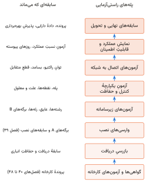
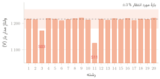
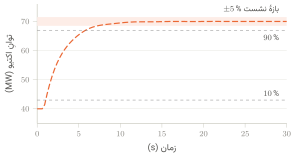
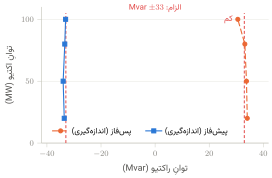
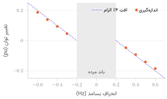
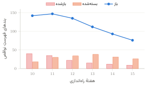
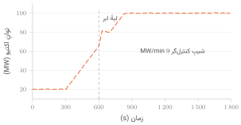

50 راهاندازی، پذیرشِ شبکه و تحویل
50.1 نقشهٔ فصل
پس از این فصل، خواننده میتواند:
- حکمرانیِ راهاندازی را از سابقهها بخوانَد: مرزِ هر سامانه، فردِ مجاز برای برقدارکردن، مجوزِ آزمون، پیشنیازها و ابزارهای آزمون.
- راستیآزماییِ پلهای را با عدد پیش ببرد: رشتهها در برابرِ مدل، مقاومتِ عایقی در برابرِ حد، رلهها در برابرِ پروندهٔ تنظیم، کنترلگر در برابرِ الزام، پوشِ توانایی، افتِ مشخصه و آزمونِ نسبتِ عملکرد.
- نواقص، عدولها، آموزش، یدکها و پذیرشِ بهرهبرداری را با معیارهای نوشتهشده ببندد.
- بستهٔ راهاندازیِ یک بلوکِ مبدّل را با پیشنیاز، روش، مرزِ ایمنی، شاهد، مسئول و تعیینِ تکلیفِ شکست بسازد.
- سامانههای کمکی را چون زنجیرههای کارکردی و سامانهٔ آتش را با کلِ ماتریسِ علت و معلول بپذیرد، بی تخلیهٔ واقعی.
- هر الزامِ شبکه را تا یک نتیجهٔ امضاشده دنبال کند و مدارِ صادرات را به ترتیب و با اجازهٔ هر پله برقدار کند.
- تحویلِ اطلاعات را بیازماید، نه فقط بفرستد: فیلدها، کلیدها، ارجاعها، بازنگریها، ورودِ آزمایشی و بازیابی؛ و آمادگیِ اضطرار را پیش از تحویل ثابت کند.
پیشنیازها: حفاظت و زمین (فصل 26)، مطالعههای شبکه و الزامها (فصل 28)، ابزارِ دقیق و کنترل (فصل 34) و اجرا و نصب (فصل 49).
- چه کسی میتواند یک مدار را برای نخستین بار برقدار کند؟
- چرا ولتاژِ مدارِ بازِ یک رشته را با مدل مقایسه میکنیم، نه با عددِ برگهٔ داده؟
- تکمیلِ مکانیکی با پذیرشِ بهرهبرداری چه فرقی دارد؟
- چرا امتیازِ پیشبینی ثابت نمیکند که یک خدمتِ شبکه داده شده است؟
پاسخها: (۱) فقط فردِ مجازی که کتبی منصوب شده است، با مجوز و پس از بستنِ پیشنیازها؛ (۲) چون ولتاژ با تابش و دمای همان لحظه تغییر میکند؛ (۳) اولی میگوید ساخت کامل است و دومی که نیروگاه با همهٔ سابقهها و آمادگیاش تحویل شده؛ (۴) چون پیشبینی خوب گفتهٔ نیروگاه دربارهٔ خودش است، نه پاسخش به رخدادِ شبکه. اگر دو پرسش یا بیشتر را نتوانستید، بخش 32.2.4، بخش 10.4.1، بخش 49.4.1 و بخش 28.4.6 را مرور کنید.
جایگاهِ این فصل در نیروگاهِ P. فصلِ ۴۹ بلوکِ =PVF1-3 را زیرسامانه به زیرسامانه تحویلِ راهاندازی داد. این فصل آنها را آزمایش، برقدار و تحویلِ بهرهبرداری میدهد، با گروهِ آزمونِ ساختگیِ پیمانکار، شاهدِ کارفرما و در نقطهٔ اتصال شاهدِ بهرهبردارِ شبکه (A-514 تا A-521). روزِ مرجعِ سابقهها ماهِ شانزدهم از ساخت است. فصلهای ۲۶، ۲۸، ۳۴ و ۳۵ تنظیمها، الزامها، آزمونهای طرحشده و آزمونِ پذیرشِ ساختگاه را دادند، و فصلِ ۳۸ ماتریسِ ردیابیِ الزامها و تحویلِ اطلاعات را. این فصل همه را به سابقههای امضاشده میبرد. همه با تصمیمِ D-054 جمع میشوند و بخشِ هشتمِ کتاب با آن بسته میشود.
گروهها، دادهها و عیبها ساختگیاند و حدها آموزشی. این فصل سابقهها، مقدارهای مورد انتظار و معیارهای پذیرش را آموزش میدهد، نه روشِ آزمون. ولتاژِ آزمون، ترتیبِ کلیدزنی و روشِ کار روی مدارِ برقدار را روشهای تأییدشده و سازندگان میدهند. هر آزمونِ میدانی به دستِ گروهِ صلاحیتدار، با مجوزِ آزمون و زیرِ نظرِ فردِ مجاز انجام میشود (بخش 32.2.4). آزمونِ سامانهٔ آتش هرگز با تخلیهٔ واقعی یا آتشِ کنترلنشده انجام نمیشود. جزئیاتِ امنیتی در این کتاب نمیآید.
50.2 الف. حکمرانیِ راهاندازی
راهاندازی جایی است که تجهیزِ ساکن برقدار میشود. پس پیش از هر آزمون، پنج پرسشِ حکمرانی پاسخِ نوشته دارند:
- مرز: کدام زیرسامانه آزموده میشود و مرزِ جداییِ آن از بخشهای برقدار کجاست (بخش 49.4.1، بخش 18.4.9)؟
- اختیار: چه کسی میتواند آن را برقدار کند؟ فردِ مجاز کسی است که مالک کتبی منصوب کرده است. در نقطهٔ اتصال، تصمیم با بهرهبردارِ شبکه است (بخش 23.2.5).
- مجوز: مجوزِ آزمون محدوده، گروه، جداسازیها و زمان را مینویسد، همان سامانهٔ مجوزِ کارِ فصلِ ۳۲.
- پیشنیازها: چه چیزهایی پیش از برقدارکردن بسته شدهاند؟ اینها وارسیهای پیش از برقدارکردناند.
- ابزار و معیار: با کدام ابزارِ واسنجیشده و در برابرِ کدام معیارِ نوشتهشده سنجیده میشود؟
def authority() -> list:
bad = []
for boundary, _, by, permit in src.REQUESTS:
why = []
if by not in src.AUTHORITY.get(boundary, set()):
why.append(f"{by} is not authorised for it")
if permit is None:
why.append("no sanction-for-test permit")
if why:
bad.append((boundary, why))
return bad50.2.2 پیشنیازهای یک برقدارکردن
ایده. پیش از نخستین برقدارکردنِ زیرسامانهٔ فشارِ متوسطِ بلوک، فهرستی از پیشنیازها بسته میشود: گواهیِ تکمیلِ مکانیکی، برگههای B، تنظیمهای حفاظت، زمینهای موقت، اطلاع به گروهها، حصار و تابلو، ازکارافتادگیِ آتش و هشدارهای اسکادا.
prerequisites before =PVF1-3.MV is energised for the first time
[x] mechanical completion certificate
[x] B check sheets complete
[ ] protection settings applied and read back
[x] temporary earths removed and logged
[ ] energisation notice issued to all crews
[x] area barriers and signs in place
[x] no open fire impairment in the area
[ ] SCADA alarms of the subsystem tested
3 of 8 open: settings not read back, crews not
told, alarms not proven - each is a way for the first
energisation to surprise someone; none is waived by the
test team, only closedمثال 50.2 (سه راه برای غافلگیری) پرسش. کدام پیشنیازها بازند و چرا هیچکدام بخشیده نمیشود؟
پاسخ. سه از هشت: تنظیمهای حفاظت بارگذاری شده ولی بازخوانی نشدهاند، به گروهها خبر داده نشده، و هشدارهای اسکادای زیرسامانه آزموده نشدهاند.
تفسیر. هر کدام راهی است که نخستین برقدارکردن کسی را غافلگیر کند: رلهای که با تنظیمِ دیگری کار میکند، کارگری که نمیداند مدار برق دارد، هشداری که اتاقِ فرمان آن را نمیبیند. گروهِ آزمون پیشنیاز را نمیبخشد، میبندد.
50.2.3 ابزارهای آزمون
ایده. هر نتیجهٔ آزمون نامِ ابزارش را دارد و ابزار تاریخِ واسنجی دارد (بخش 48.2.22).
test instruments on 2028-04-01: calibration due date
IR tester IT-04 2028-03-10
IR tester IT-07 2028-09-01
secondary injection set SI-2 2028-06-30
I-V tracer IV-1 2028-05-02
phase rotation meter PR-3 no record
power analyser PA-1 2028-12-01
out of calibration: IR tester IT-04; no record: phase rotation meter PR-3
a result from an instrument out of calibration is a result
to repeat; the test record names the instrument for that
reason (ch 48 as-found, ch 49 torque tools)مثال 50.3 (نتیجهای که باید تکرار شود) پرسش. کدام ابزارها نتیجهٔ پذیرفتنی نمیدهند؟
پاسخ. آزمونگرِ عایقِ IT-04 از 2028-03-10 گذشته است و سنجهٔ ترتیبِ فازِ PR-3 اصلاً سابقهٔ واسنجی ندارد.
تفسیر. هر نتیجهای که با IT-04 پس از تاریخ گرفته شده، تکرار میشود. این همان درسِ ابزارِ گشتاورِ فصلِ ۴۹ است (مثال 49.8).
50.2.4 مهلتِ اعلام برای آزمونهای با شاهد
ایده. آزمونهایی که بهرهبردارِ شبکه شاهدشان است، مهلتِ اعلام دارند. برنامهٔ آزمون از این مهلت به عقب ساخته میشود.
witnessed tests: notice given to the network operator (teaching 15 days)
CP-G01 capability test 2028-04-20 notice 2028-04-01 19 days
CP-G09 frequency test 2028-04-22 notice 2028-04-12 10 days SHORT
CP-G12 intertrip test 2028-04-10 notice 2028-03-20 21 days
CP-G14 ramp test 2028-04-24 notice 2028-04-15 9 days SHORT
2 tests are planned inside the notice period: the witness
may not come, and a test without its witness is repeated -
the test plan is built back from the notice, not forward
from the day the plant is readyمثال 50.4 (دو آزمون درونِ مهلت) پرسش. کدام آزمونها مهلتِ اعلامِ کافی ندارند؟
پاسخ. آزمونِ بسامد با ۱۰ روز و آزمونِ شیب با ۹ روز، در برابرِ ۱۵ روزِ آموزشی.
تفسیر. شاهد شاید نیاید و آزمونِ بیشاهد تکرار میشود. برنامه از روزی که نیروگاه آماده است به جلو ساخته نمیشود، از مهلتِ اعلام به عقب ساخته میشود.
50.2.5 دو مجوزِ آزمون روی یک مرز
ایده. هر مرز در هر لحظه فقط یک مجوزِ آزمونِ زنده دارد. برنامه مجوزهای یک روز را برای همپوشانی روی یک مرز وارسی میکند.
sanction-for-test permits on one test day: two on the same boundary
SFT-031 and SFT-033 on =PVF1-3.MV: both live 11:00-12:00
two test teams on one boundary is two sets of assumptions
about what is isolated: the permit office issues one at a
time per boundary, and the second waits for the first's
cancellation (ch 32 permits)مثال 50.5 (یک ساعتِ دو گروه) پرسش. کدام مجوزها همپوشانی دارند؟
پاسخ. SFT-031 و SFT-033 روی =PVF1-3.MV از ساعتِ ۱۱ تا ۱۲.
تفسیر. دو گروهِ آزمون روی یک مرز یعنی دو مجموعه فرض دربارهٔ اینکه چه چیزی جداست. دفترِ مجوز برای هر مرز یکی صادر میکند و دومی منتظرِ لغوِ اولی میمانَد (بخش 32.2.4).
50.2.6 ابزار در برابرِ رواداریای که داوری میکند
ایده. هر ابزار نتیجهای را در برابرِ یک رواداری داوری میکند. نسبتِ رواداری به عدمِ قطعیتِ ابزار باید بزرگ باشد. فصلِ ۴۰ نسبتِ ۴ را خواست (بخش 40.4).
test instruments against the tolerance each result is judged by
(ch 40 asks for a ratio of 4)
test tolerance uncertainty ratio
relay operating time at 0.86 s 0.083 s 0.01 s 8.3
string Voc at 1,217 V 36.5 V 6.1 V 6.0
reactive power at the POC 1 Mvar 0.33 Mvar 3.0
PR from the reference pyranometer 2 % 1.05 % 1.9
below 4: reactive power at the POC, PR from the reference pyranometer
the PR test's own instrument is the weak one: the
calibration chain of ch 48 (ratio 1.4) carries into the
guarantee - which is why the lower bound of lesson B
fell just below the guaranteeمثال 50.6 (ابزاری که ضمانت را داوری میکند) پرسش. کدام آزمونها ابزارِ ضعیف دارند؟
پاسخ. توانِ راکتیو با نسبتِ 3.0 و نسبتِ عملکرد با 1.9.
تفسیر. ضعیفترین ابزار همان است که ضمانت را داوری میکند. زنجیرهٔ واسنجیِ فصلِ ۴۸ (مثال 48.15) به آزمونِ ضمانت میرسد. برای همین کرانِ پایینِ مثال 50.13 کمی زیرِ ضمانت افتاد.
- پنج پرسشِ حکمرانیِ راهاندازی را بگویید.
- فردِ مجاز را تعریف کنید.
- مجوزِ آزمون چه چیزهایی را مینویسد؟
- چرا سمتِ 132 kV تصمیمِ بهرهبردارِ شبکه است؟
- سه پیشنیازِ باز در مثال 50.2 کداماند و هر کدام چه خطری دارد؟
- نتیجهٔ ابزارِ گذشته از واسنجی چه سرنوشتی دارد؟
- چرا پیشنیاز بخشیده نمیشود؟
50.3 ب. راستیآزماییِ پلهای
راهاندازی یک آزمونِ بزرگ در پایان نیست. راستیآزماییِ پلهای است: هر پله فقط چیزی را ثابت میکند که پلههای پیشین ثابت نکردهاند و سابقهای به جا میگذارد که پلهٔ بعد به آن تکیه میکند (شکل 50.1). آزمونی که پلهٔ پیشینش انجام نشده، چیزی را ثابت نمیکند: رشتهای که عایقش آزموده نشده، با برقدارشدنِ مبدّل خودش را نشان میدهد.

هر نتیجه با یک مقدارِ مورد انتظار و یک معیارِ نوشتهشده سنجیده میشود. «کار میکند» معیار نیست. مقدارِ مورد انتظار از مدلی میآید که پیشتر در کتاب ساخته شد: رشته از مدلِ تکدیودیِ فصلِ ۱۰، رله از پروندهٔ تنظیمِ فصلِ ۲۶، کنترلگر از الزامِ فصلهای ۲۰ و ۲۸.
50.3.1 رشتهها در برابرِ مدل
ایده. ولتاژِ مدارِ باز و جریانِ اتصالِ کوتاهِ هر رشته در تابش و دمای همان لحظه با مدلِ تکدیودی پیشبینی میشود (بخش 10.4.1). ولتاژِ رشته \(n\) برابرِ ولتاژِ یک ماژول است:
\[ V_\text{oc,s} = n\, V_\text{oc}(G, T_\text{c}),\qquad I_\text{sc,s} = I_\text{sc}(G, T_\text{c}) \tag{50.1}\]
اختلافِ ولتاژ تقسیم بر ولتاژِ یک ماژول میگوید چند ماژول کم است.
def string_expected(n_modules: int, g_wm2: float, t_cell_c: float,
ds: pvcell.Datasheet = pvcell.PVM_550_DS
) -> tuple[float, float]:
"""Open-circuit voltage and short-circuit current of a string of
n_modules at irradiance g_wm2 and cell temperature t_cell_c."""
m = pvcell.at_conditions(pvcell.fit(ds), g_wm2, t_cell_c, ds.alpha_isc)
return n_modules * m.voc, m.isc
def string_check(voc: float, isc: float, voc_exp: float,
isc_exp: float, n_modules: int, tol_v: float = 0.03,
tol_i: float = 0.05) -> str:
"""Verdict on one string's open-circuit voltage and short-circuit
current against the expected values: reversed polarity, a module short
(or bypassed), low voltage, low current, or ok."""
if voc < 0:
return "reversed polarity"
short = (voc_exp - voc) / (voc_exp / n_modules)
if abs(voc - voc_exp) > tol_v * voc_exp:
if 0.5 < short < 3.5:
return f"about {short:.0f} module(s) short"
return "voltage off"
if isc < (1 - tol_i) * isc_exp:
return "low current"
return "ok"combiner =PVF1-3-CB07, 20 strings of 26 PVM-550 at 820 W/m2 and 45 C
expected Voc 1,217 V and Isc 11.58 A (ch 10 single-diode model)
(tolerances: Voc 3 %, Isc 5 %, teaching)
S03: Voc +1,172 V, Isc 11.57 A - about 1 module(s) short
S05: Voc -1,216 V, Isc 11.52 A - reversed polarity
S07: Voc +1,215 V, Isc 10.52 A - low current
S11: Voc +1,125 V, Isc 11.50 A - about 2 module(s) short
4 of 20 strings fail: a reversed string is found
before it meets the others at the fuse; a string one or
two modules short is a connector skipped or a module
bypassed; low current is shading, soiling or a mixed bin
مثال 50.7 (یک رشتهٔ وارونه و دو رشتهٔ کوتاه) پرسش. کدام رشتهها رد میشوند و هر کدام چه معنایی دارد؟
پاسخ. در 820 W/m² و 45 °C انتظار 1,217 V و 11.58 A است. S05 وارونه است، S03 با 1,172 V یک ماژول و S11 با 1,125 V دو ماژول کم دارند، و S07 جریانِ کم دارد.
تفسیر. رشتهٔ وارونه پیش از آنکه در فیوز به دیگران برسد پیدا میشود. رشتهٔ کوتاه یعنی اتصالدهندهای جاافتاده یا ماژولی که دیودهای کناریاش آن را دور زدهاند. جریانِ کم سایه، گردوغبار یا ماژولی از ردهٔ دیگر است. هر کدام پیش از برقدارکردنِ مبدّل پیدا شد، پلهٔ ۴.
50.3.2 مقاومتِ عایقی
ایده. مقاومتِ عایقیِ هر رشته با حدِ مشخصهٔ آزمونِ پروژه مقایسه میشود. روش و ولتاژِ آزمون را روشِ تأییدشده میدهد، نه این کتاب (IEC 62446-1، STD-063).
insulation resistance of the 20 strings against the project limit (40 Mohm)
S06: 3.1 Mohm
S13: no record
S16: 0.8 Mohm
a low value is a damaged cable, a wet connector or a
pinched sheath; the string stays isolated until the fault
is found and the test repeated; the test method and its
voltage come from the approved procedure, not this bookمثال 50.8 (یک رکوردِ گمشده هم یافته است) پرسش. کدام رشتهها پذیرفته نمیشوند؟
پاسخ. S06 با 3.1 MΩ، S16 با 0.8 MΩ و S13 بیرکورد.
تفسیر. مقدارِ کم یعنی کابلِ آسیبدیده، اتصالدهندهٔ خیس یا روکشِ فشردهشده. رشته جدا میمانَد تا عیب پیدا و آزمون تکرار شود. رکوردِ گمشده آزمونی است که انجام نشده. تعیینِ تکلیفِ این سه در بخشِ «ت» دنبال میشود.
50.3.3 رلهها در برابرِ پروندهٔ تنظیم
ایده. با تزریقِ ثانویه جریانی معلوم به رله داده میشود و زمانِ عملکرد اندازهگیری میشود. زمانِ مورد انتظار از منحنیِ معکوسِ استاندارد و تنظیمهای پروندهٔ فصلِ ۲۶ میآید (معادلهٔ 26.6، بخش 26.3.2).
def relay_check(results, tol_share: float = 0.05, tol_s: float = 0.04,
curve: str = "standard inverse") -> list:
"""results: (relay, test current A, pickup A, TMS, measured s). The
expected time comes from the inverse curve; a result is out if it
differs by more than tol_share of the expected time plus tol_s."""
bad = []
for name, i, pickup, tms, t_meas in results:
t_exp = protection.trip_time(i, pickup, tms, curve)
if t_meas is None or abs(t_meas - t_exp) > tol_share * t_exp + tol_s:
bad.append((name, t_exp, t_meas))
return bad33 kV feeder overcurrent relays: injection results against the settings
(standard-inverse curve; tolerance 5 % + 40 ms, teaching)
relay I/Is expected s measured s
WS1 51 5.0 0.86 0.86
WS2 51 5.0 0.86 0.84
WS3 51 5.0 1.07 1.30 OUT
PVF1 51 5.0 0.64 0.66
PVF2 51 5.0 0.64 0.63
PVF3 51 5.0 0.64 none OUT
BESS-A 51 5.0 0.43 0.44
2 out: WS3's time points to a TMS left at another value
(the settings file of ch 26 says 0.25; 1.30 s fits about
0.30) and PVF3 was never tested - the read-back of the
settings file is the check before injection (lesson A)مثال 50.9 (رلهای که تنظیمِ دیگری دارد) پرسش. کدام رلهها بیرون از رواداریاند و زمانِ WS3 چه میگوید؟
پاسخ. WS3 با 1.30 s در برابرِ \(0.25 \times 0.14/(5^{0.02} - 1) = 1.07\,\text{s}\) و PVF3 که آزموده نشده است. 1.30 s با ضریبِ زمانیِ حدودِ 0.30 میخواند.
تفسیر. رله کار میکند ولی با تنظیمی که پروندهٔ تنظیم نمیگوید. حاشیهٔ هماهنگیِ فصلِ ۲۶ با همین عدد عوض میشود. بازخوانیِ پروندهٔ تنظیم پیش از تزریق، همان پیشنیازِ بازِ مثال 50.2، این را زودتر پیدا میکرد.
50.3.4 آزمونِ پلهٔ کنترلگرِ نیروگاه
ایده. آزمونِ پله نقطهٔ تنظیمِ توانِ اکتیو را در نقطهٔ اتصال پلهای عوض میکند و پاسخ را میسنجد: زمانِ خیز از ۱۰ تا ۹۰ درصد، زمانِ نشست در بازهٔ \(\pm 5\,\%\) و فراجهش. همان طرحِ فصلِ ۲۰ است، این بار روی نیروگاهِ واقعی (بخش 20.2.3، بخش 34.8.6).
plant-controller step test: set point 40 -> 70 MW at the POC
rise (10-90 %) 4.8 s, required <= 6 s
settling (+/-5%) 7.3 s, required <= 15 s
overshoot 0.0% - pass
the test repeats ch 20's design case on the real plant: the
delay and the time constant measured here go back into the
validated model (REQ-G21)
مثال 50.10 (پاسخی که مدل را درست میکند) پرسش. آزمون قبول است؟
پاسخ. خیز 4.8 s در برابرِ 6 s، نشست 7.3 s در برابرِ 15 s، بیفراجهش: قبول.
تفسیر. تأخیر و ثابتِ زمانیِ اندازهگیریشده به مدلِ اعتبارسنجیشده برمیگردند (REQ-G21). مدلی که با آزمونِ واقعی نخواند، مطالعههای فصلِ ۲۸ را بیپشتوانه میکند.
50.3.5 پوشِ توانایی در نقطهٔ اتصال
ایده. در چند سطحِ توانِ اکتیو، بیشترین توانِ راکتیوِ پسفاز و پیشفاز اندازهگیری و با پوشِ تواناییِ الزامشده مقایسه میشود (بخش 28.7.1).
reactive capability at the POC (ch 28 REQ-G01: +/-33 Mvar, teaching)
P MW required lagging leading
20 33 34.1 -33.6
50 33 33.8 -34.0
80 33 33.2 -33.4
100 33 30.6 -33.1 SHORT
at 100 MW the plant reaches 30.6 Mvar lagging: the converter
current limit and the hot day of ch 28 meet; the result is
a deviation for the network operator to accept or a
compensator to add - not a test to repeat until it passes
مثال 50.11 (سه مگاوار کم در توانِ کامل) پرسش. کجا الزام برآورده نمیشود و چه باید کرد؟
پاسخ. در 100 MW، 30.6 Mvar پسفاز در برابرِ 33.
تفسیر. حدِ جریانِ مبدّلها و روزِ گرمِ فصلِ ۲۸ به هم میرسند. نتیجه یک عدول است که بهرهبردارِ شبکه میپذیرد یا جبرانسازی که افزوده میشود. آزمونی نیست که تکرار شود تا قبول شود.
50.3.6 پاسخِ بسامدی
ایده. سیگنالِ انحرافِ بسامد به کنترلگر تزریق میشود و تغییرِ توان اندازهگیری میشود. شیبِ خارج از باندِ مرده افتِ مشخصه را میدهد (بخش 20.2.7):
\[ R = \frac{100}{f_\text{n}\, k},\qquad k = \frac{\sum \Delta f_\text{e}\,(-\Delta P)}{\sum \Delta f_\text{e}^2} \tag{50.2}\]
که \(\Delta f_\text{e}\) انحرافِ بیرون از باندِ مرده و \(k\) شیب بر حسبِ پریونیت در هر هرتز است.
frequency-response test: injected deviations outside a 0.2 Hz deadband
measured droop 4.30 %, required 4.0 +/- 0.5 % - pass
the test injects a signal into the controller, not a real
frequency event; a real event later is compared with this
result before the service is paid for (lesson G)
مثال 50.12 (چهار و سهدهم درصد) پرسش. افتِ اندازهگیریشده در رواداری است؟
پاسخ. 4.30 % در برابرِ \(4.0 \pm 0.5\,\%\): قبول.
تفسیر. آزمون یک سیگنالِ تزریقی است، نه رخدادِ واقعی. این توانایی را ثابت میکند. اینکه خدمت در یک رخدادِ واقعی داده شد، با سابقهٔ رخداد ثابت میشود (بخشِ «چ»).
50.3.7 آزمونِ نسبتِ عملکرد
ایده. نسبتِ عملکرد در روزهای آزمون با معادلهٔ 37.1 حساب میشود. روزهایی که دسترسپذیریِ دادهشان کمتر از حدِ قرارداد است کنار میروند. عدمِ قطعیتِ آزمون از حسگرها میآید (بخش 48.2.14).
PR test, 10 days; days with data availability < 95% left out: 6
9 days: AC 2,988 MWh, POA 60.3 kWh/m2, DC 60,000 kWp
PR = 2,988 x 1000 / (60,000 x 60.3) = 0.826
guarantee 0.81; test uncertainty +/-0.02 -> lower bound 0.806
the measured PR meets the guarantee; its lower bound does
not - whether the uncertainty counts is the contract's
rule, written before the test (ch 37, ch 48 sensors)مثال 50.13 (مقداری که میگذرد و کرانی که نه) پرسش. نسبتِ عملکرد و کرانِ پایینش چیست؟
پاسخ. روزِ ۶ با 82 % داده کنار میرود. نُه روزِ دیگر \(2\,988\,000 / (60\,000 \times 60.3) = 0.826\) میدهند. با عدمِ قطعیتِ \(\pm 0.020\)، کرانِ پایین 0.806 است.
تفسیر. مقدارِ اندازهگیریشده ضمانتِ 0.81 را برآورده میکند و کرانِ پایینش نه. اینکه عدمِ قطعیت به حساب بیاید، قاعدهٔ قرارداد است و پیش از آزمون نوشته میشود، نه پس از دیدنِ نتیجه (بخش 37.7.8).
50.3.8 آزادسازیِ توربینها برای تولید
ایده. هر توربین شش گام دارد: مکانیکی، برقی، کنترلگر، اسکادا، الزامهای شبکه و امضای سازنده. فقط توربینی که هر شش را دارد برای تولید آزاد میشود.
turbine commissioning steps:
mechanical, electrical, controller, SCADA, grid code, maker sign-off
released to production: 7 of 12 (T01, T02, T04, T07, T08, T10, T11)
T03: waiting for SCADA
T05: waiting for maker sign-off
T06: waiting for controller, SCADA, grid code, maker sign-off
T09: waiting for grid code
T12: waiting for electrical, controller, SCADA, grid code, maker sign-off
a turbine produces only when its own six steps are signed:
T03 waits for SCADA, T05 for the maker's sign-off - and
energy before release is test energy, recorded as suchمثال 50.14 (هفت از دوازده) پرسش. کدام توربینها آزادند و بقیه منتظرِ چهاند؟
پاسخ. هفت توربین آزادند. T03 منتظرِ اسکادا، T05 منتظرِ امضای سازنده، T09 منتظرِ الزامهای شبکه، و T06 و T12 منتظرِ چند گاماند.
تفسیر. توربین فقط با امضای شش گامِ خودش تولید میکند. انرژیِ پیش از آزادسازی انرژیِ آزمون است و جدا ثبت میشود.
50.3.9 نسبتِ ترانسفورماتور در نخستین برقدارکردن
ایده. در نخستین برقدارکردنِ بیبار، نسبتِ ولتاژها از ترانسفورماتورهای ولتاژِ خودِ نیروگاه خوانده و با پلاکِ ترانسفورماتور در همان پلهی تپ مقایسه میشود (بخش 43.4).
main transformer T1 at first energisation, no load, tap 0
HV 132.6 kV, LV 33.42 kV: ratio 3.9677 against nameplate 4.0000
difference -0.81% (teaching tolerance 0.5%) - CHECK
the same check as the factory's (ch 43) read from the
plant's own VTs: a tap left off its position, or a VT
wired to the wrong ratio, shows here before any loadمثال 50.15 (هشتدهم درصد بیرون) پرسش. نسبت با پلاک میخواند؟
پاسخ. \(132.6/33.42 = 3.968\) در برابرِ 4.000، یعنی −0.81 %، بیرون از رواداریِ آموزشیِ 0.5 %.
تفسیر. همان وارسیِ کارخانه، این بار از ترانسفورماتورهای ولتاژِ نیروگاه. تپی که در جای خود نیست یا ترانسفورماتورِ ولتاژی که با نسبتِ دیگری سیمکشی شده، اینجا پیش از هر باری دیده میشود.
50.3.10 چرخهٔ راهاندازیِ باتری
ایده. باتری یک بار کامل شارژ و تخلیه میشود و بازدهِ رفتوبرگشت با طرحِ فصلِ ۱۹ مقایسه میشود، بر یک مبنا: با یا بی انرژیِ کمکی (فصل 19).
BESS-A commissioning cycle, full charge then full discharge (POC side)
energy in 41.8 MWh, out 35.4 MWh, auxiliaries 1.1 MWh
round trip 84.7% without, 82.5% with auxiliaries; ch 19 design 86%
the design figure included the auxiliary energy (ch 19); the
comparison is made on the same basis or the battery looks
better than it is - the warranty test names the basisمثال 50.16 (یک مبنا برای مقایسه) پرسش. بازدهِ رفتوبرگشت با طرح میخواند؟
پاسخ. بی انرژیِ کمکی 84.7 % و با آن 82.5 %. طرحِ فصلِ ۱۹ 86 % با انرژیِ کمکی بود.
تفسیر. مقایسهٔ عددِ بیکمکی با عددِ باکمکیِ طرح باتری را بهتر از آنچه هست نشان میدهد. آزمونِ ضمانت مبنایش را نام میبرد. اینجا اختلاف 3.5 امتیاز است و با سازنده بررسی میشود.
50.3.11 حفاظتِ دیفرانسیلِ ترانسفورماتور در نخستین بار
ایده. در نخستین بار، جریانِ دیفرانسیل و جریانِ مهارِ رلهٔ ترانسفورماتورِ اصلی خوانده میشود. ترانسفورماتورِ جریانی که وارونه وصل شده، بار را دو برابر به دیفرانسیل میدهد (بخش 26.3.2).
main transformer T1 differential at first load (30% of rating);
pickup 0.2 pu (ch 26 teaching setting)
case HV pu LV pu differential pu
CTs as designed 0.30 0.30 0.00
one LV CT set reversed 0.30 -0.30 0.60 TRIPS
LV CT ratio one step off 0.30 0.28 0.02
a reversed CT doubles the load into the differential: at 30 %
load it would trip; the commissioning reading at low load
(the relay's own differential and restraint values) finds
it before the load does - the same lesson as ch 48's meterمثال 50.17 (خطایی که بار پیدا میکرد) پرسش. با یک دسته ترانسفورماتورِ جریانِ وارونه در سمتِ فشارِ ضعیف، در 30 % بار چه میشود؟
پاسخ. دیفرانسیل \(|0.30 - (-0.30)| = 0.60\) پریونیت، بالای راهاندازیِ 0.2: رله عمل میکند. نسبتِ یک پله نادرست فقط 0.02 میدهد و پنهان میمانَد.
تفسیر. خواندنِ مقدارهای خودِ رله در بارِ کم خطا را پیش از بار پیدا میکند. همان درسِ کنتورِ فصلِ ۴۸ است (مثال 48.22). خطای نسبت کوچک است و فقط با مقایسهٔ اندازهها، نه با عملنکردنِ رله، دیده میشود.
50.3.12 شبکهٔ زمینِ اندازهگیریشده
ایده. مقاومتِ شبکهٔ زمینِ پست اندازهگیری و افزایشِ پتانسیلِ زمین با جریانِ خطای بازگشتی دوباره حساب میشود: \(\text{GPR} = I_\text{g}\,R_\text{g}\) (معادلهٔ 26.14).
substation earth grid: measured resistance against the design (ch 26)
design 0.5 ohm, measured 0.62 ohm (dry season)
rise of potential at 3.0 kA into the grid: 1.50 kV designed,
1.86 kV measured
against the 1.6 kV the touch and step study allowed (teaching): over
the study is rerun with the measured value (and the wet
season's), and the remedy - more electrodes, a surface
layer - designed by the earthing engineer, not chosen on
site; the measurement method is the approved one (ch 26)مثال 50.18 (صدوبیست میلیاهمِ بیشتر) پرسش. افزایشِ پتانسیل با مقدارِ اندازهگیریشده چقدر است؟
پاسخ. \(3\,000 \times 0.62 = 1\,860\,\text{V}\)، بالای 1.6 kV آموزشیِ مطالعه، در برابرِ 1.5 kV طرح.
تفسیر. مطالعهٔ ولتاژِ تماس و گام با مقدارِ اندازهگیریشده و مقدارِ فصلِ تر دوباره اجرا میشود. چاره، الکترودِ بیشتر یا لایهٔ سطحی، را مهندسِ زمین طرح میکند، نه کارگاه.
- هشت پلهٔ راستیآزمایی را به ترتیب بگویید.
- ولتاژِ مدارِ بازِ یک رشته را با معادلهٔ 50.1 برای ۲۴ ماژول حساب کنید.
- چرا مقاومتِ عایقی پیش از برقدارکردنِ مبدّل آزموده میشود؟
- زمانِ مورد انتظارِ یک رله را با پنج برابر جریانِ راهاندازی و ضریبِ زمانیِ 0.1 حساب کنید.
- سه معیارِ آزمونِ پله کداماند؟
- چرا کمبودِ توانِ راکتیو عدول است، نه آزمونِ تکراری؟
- معادلهٔ 50.2 را توضیح دهید.
- چرا روزی با دادهٔ ناقص از آزمونِ نسبتِ عملکرد کنار میرود؟
- قاعدهٔ عدمِ قطعیت در آزمونِ ضمانت کِی نوشته میشود؟
50.4 پ. بستنِ نواقص و تحویل
پس از آزمونها چهار چیز باید بسته شود تا نیروگاه تحویلِ بهرهبرداری شود: فهرستِ نواقص با آزمونهای دوباره، عدولها با تصمیمِ صاحبشان، آموزش با سنجش، و یدکها، ضمانتها، روشهای بهرهبرداری و سابقهها. پذیرشِ بهرهبرداری همهٔ اینها را با معیارهای قرارداد میسنجد (مثال 50.51). تکمیلِ مکانیکیِ فصلِ ۴۹ میگفت ساخت کامل است. پذیرشِ بهرهبرداری میگوید نیروگاه با همهٔ سابقهها و آمادگیاش تحویل شده است.
50.4.1 فهرستِ نواقصِ راهاندازی
ایده. آزمون نواقصِ تازه پیدا میکند. پس فهرست با نرخِ خالصِ بستن پیشبینی میشود: بستهشده منهای بازشدهٔ هر هفته.
commissioning punch list by week (opened, closed, still open)
week opened closed open
10 40 18 142
11 35 30 147
12 22 34 135
13 15 38 112
14 12 31 93
15 9 26 76
net closing over the last three weeks 19.7 a week: the list
empties in about 3.9 weeks, week 19 against the target week 18
new items are still being found (testing finds them); the
list closes when finding slows - the net rate, not the
closing rate, is the one that forecasts
مثال 50.19 (هفتهٔ ۱۹ بهجای ۱۸) پرسش. فهرست کِی خالی میشود؟
پاسخ. با نرخِ خالصِ 19.7 بند در هفته در سه هفتهٔ اخیر، ۷۶ بندِ باز در حدودِ چهار هفته بسته میشوند: هفتهٔ ۱۹، یک هفته پس از هدف.
تفسیر. فهرست وقتی بسته میشود که یافتن کند شود. نرخِ بستن بهتنهایی، که در هفتهٔ ۱۳ به ۳۸ رسید، پیشبینی را خوشبینانه میکند.
50.4.2 عدولها و صاحبانشان
ایده. هر عدول یک تصمیمِ ثبتشده است: پذیرفته، ردشده یا باز، و چه کسی تصمیم میگیرد (بخش 38.2).
deviations: what was accepted, by whom, on what condition
DEV-07: PV station heater rated 2 kW, ordered 3 kW
accepted; monitor winter RH
DEV-11: Q at 100 MW: 30.6 Mvar lagging vs 33
open; network operator to decide
DEV-14: UPS-1 autonomy 26 min vs 30
rejected; battery string to be replaced
a deviation is a recorded decision, not a forgotten defect:
DEV-11 belongs to the network operator (the POC is theirs),
DEV-14 is rejected and becomes a punch item with a dateمثال 50.20 (سه عدول، سه صاحب) پرسش. کدام عدولها هنوز تصمیم یا اقدام میخواهند؟
پاسخ. DEV-11 باز است و صاحبش بهرهبردارِ شبکه است، چون نقطهٔ اتصال از آنِ اوست. DEV-14 رد شده و یک بندِ نواقص با تاریخ میشود.
تفسیر. عدول تصمیمِ ثبتشده است، نه عیبِ فراموششده. عدولی که کارفرما پذیرفته، شرطش را هم در سابقه دارد: پایشِ رطوبت در زمستان برای DEV-07.
50.4.3 آموزش با سنجش
ایده. برای هر نقش، شمارِ لازم با شمارِ آموزشدیده و شمارِ سنجیدهشده مقایسه میشود.
training by role: people needed, trained, assessed competent
role need trained assessed
control-room operator 8 8 6
authorised person (HV) 4 3 3
PV technician 6 6 6
wind technician 10 7 5
fire warden 6 6 6
short of assessed people:
control-room operator: 2
authorised person (HV): 1
wind technician: 5
attendance is not competence: a role is staffed by people
assessed in it, and an authorised person is appointed in
writing (lesson A) - the wind technicians are the largest gapمثال 50.21 (حضور شایستگی نیست) پرسش. کدام نقشها کمبودِ افرادِ سنجیده دارند؟
پاسخ. اپراتورِ اتاقِ فرمان ۲، فردِ مجازِ فشارِ قوی ۱ و فنیِ توربین ۵.
تفسیر. نقش با کسانی پر میشود که در آن سنجیده شدهاند. فردِ مجاز کتبی منصوب میشود (بخشِ «الف»). نیمی از فنیهای توربین هنوز سنجیده نشدهاند و این بزرگترین کمبود است.
50.4.4 یدکها
ایده. یدکهای راهاندازی و سالِ نخست با فهرستِ یدکها مقایسه میشوند (بخش 18.4.12).
commissioning and first-year spares: listed against received
inverter power stack 2 listed, 2 received
string fuses 200 listed, 200 received
RMU spares kit 1 listed, 0 received
SCADA switch RS-8 2 listed, 2 received
anemometer 3 listed, 1 received
UPS battery string 1 listed, 0 received
short:
RMU spares kit: 1
anemometer: 2
UPS battery string: 1
the UPS battery string is the one DEV-14 needs; spares are
part of handover and of the asset records (ch 18 spares,
ch 49 K)مثال 50.22 (یدکی که یک عدول لازم دارد) پرسش. چه چیزی نرسیده است؟
پاسخ. بستهٔ یدکِ کلیدِ حلقوی، دو بادسنج و رشتهٔ باتریِ UPS.
تفسیر. رشتهٔ باتریِ UPS همان چیزی است که DEV-14 لازم دارد. یدک بخشی از تحویل و سابقهٔ دارایی است و با شمارهٔ سریالش وارد سامانهٔ نگهداری میشود (بخشِ «خ»).
50.4.5 تاریخِ آغازِ ضمانتها
ایده. تاریخِ آغازِ ضمانت در سابقهٔ دارایی با قرارداد مقایسه میشود (مثال 49.43).
warranty start dates in the asset records against the contract
(teaching: warranties start at taking-over, turbines per their own
contract)
PV modules record 2027-10-15 contract 2028-06-01
unit transformers record 2028-01-10 contract 2028-06-01
BESS record none contract 2028-06-01
PV modules: 7.6 months of warranty lost on paper
unit transformers: 4.7 months of warranty lost on paper
started at delivery instead of taking-over: found only at
the first claim; the record takes the contract's dateمثال 50.23 (ضمانتی که روی کاغذ کوتاه شد) پرسش. کدام سابقهها تاریخِ نادرست دارند و چه هزینهای دارد؟
پاسخ. ماژولها از روزِ تحویلِ کالا آغاز شدهاند و 7.6 ماه، ترانسفورماتورهای واحد 4.7 ماه را روی کاغذ از دست دادهاند. باتری تاریخ ندارد.
تفسیر. چنین خطایی در نخستین ادعا پیدا میشود، وقتی سازنده میگوید ضمانت تمام شده است. سابقه تاریخِ قرارداد را میگیرد.
50.4.6 سندهای چونساخت در تحویل
ایده. سهمِ سندهایی که به وضعیتِ چونساخت رسیدهاند، به تفکیکِ رشته (بخش 38.2.2).
documents at as-built status (ASB, ch 38) by discipline at handover
discipline documents at ASB share
electrical 120 96 80%
civil 85 80 94%
control 60 41 68%
mechanical 40 38 95%
fire 25 18 72%
plant: 273 of 330 (83%)
control is furthest behind - the very drawings whose
changes lessons B and C of ch 48 found; an IFC drawing at
handover is a drawing of a plant that was never builtمثال 50.24 (نقشهای از نیروگاهی که ساخته نشد) پرسش. کدام رشته عقبتر است؟
پاسخ. کنترل با 68 %. کلِ نیروگاه 83 %.
تفسیر. کنترل همان رشتهای است که تغییرهای میدانیاش را فصلِ ۴۸ پیدا کرد. نقشهای که در تحویل هنوز «برای اجرا» است، نقشهٔ نیروگاهی است که هرگز ساخته نشد.
50.4.7 فردِ مجاز در هر شیفت
ایده. شمارِ افرادِ مجازِ سنجیده با فهرستِ شیفتها مقایسه میشود. هر شیفت دستکم یک فردِ مجاز برای کلیدزنی میخواهد.
authorised persons (HV) assessed: 3; shifts on the roster: 4
shift A: N. Tehrani
shift B: A. Hosseini, K. Saberi
shift C: none
shift D: none
shifts without an authorised person: C, D
a fault on those shifts waits for a call-out before any
switching: the fourth person of lesson C is needed for
the roster, and shift B's second could move to C or Dمثال 50.25 (دو شیفتِ بیکلیدزن) پرسش. کدام شیفتها فردِ مجاز ندارند؟
پاسخ. شیفتهای C و D.
تفسیر. خرابی در این شیفتها پیش از هر کلیدزنی منتظرِ فراخوان میمانَد. نفرِ چهارمِ مثال 50.21 برای فهرستِ شیفت لازم است، و نفرِ دومِ شیفتِ B میتواند جابهجا شود.
- چهار چیزی که پیش از پذیرشِ بهرهبرداری بسته میشوند کداماند؟
- تکمیلِ مکانیکی و پذیرشِ بهرهبرداری را مقایسه کنید.
- چرا نرخِ خالص، نه نرخِ بستن، فهرستِ نواقص را پیشبینی میکند؟
- عدول با عیبِ فراموششده چه فرقی دارد؟
- صاحبِ عدولِ توانِ راکتیو کیست؟
- چرا حضور در آموزش شایستگی نیست؟
- یدک چگونه به سابقهٔ دارایی میرسد؟
50.5 ت. آزمایشگاهِ راهاندازی: بستهٔ یک بلوکِ مبدّل
این بخش مثالِ کارشدهٔ اصلیِ فصل است: فهرستِ راهاندازیِ یک بلوکِ مبدّل، با پیشنیازها، روش، شاهدِ پذیرش و مسئول. بلوک همان =PVF1-3 است: رشتهها، جعبههای ترکیب، ایستگاهِ مبدّلِ فصلِ ۴۴ و ترانسفورماتورِ واحدِ فصلهای ۳۹ و ۴۳. هر گامِ بسته شش فیلد دارد:
| فیلد | پرسش |
|---|---|
| پیشنیازها | چه چیزی پیش از این گام بسته شده است؟ |
| روش | کدام روشِ تأییدشده یا دستورِ سازنده؟ |
| مرزِ ایمنی | چه چیزی برق دارد، چه چیزی جداست، با کدام مجوز؟ |
| شاهد | چه سابقهای قبولیِ گام را ثابت میکند؟ |
| مسئول | چه کسی انجام میدهد و امضا میکند؟ |
| اگر شکست خورد | تعیینِ تکلیف، پیش از آزمون نوشتهشده |
ROWS = [ # step, prerequisites, method, boundary, evidence, by, if it fails
("C01 documents and certificates",
"FAT reports (ch 44), MC certificate (ch 49)", "CP-PV-01 review",
"none (paper)", "review sheet, list of gaps", "owner's engineer",
"hold the pack; request the missing records"),
("C02 visual and mechanical", "C01; area handed over",
"CP-PV-02 checklist", "de-energised, isolated, locked (permit)",
"checklist, photos", "test team",
"punch item A or B; retest after closure"),
("C03 string polarity, Voc, Isc",
"C02; strings connected at combiners only",
"CP-PV-03 (approved, per IEC 62446-1)",
"DC live in daylight: qualified team, PPE per procedure",
"string record with G and T", "test team",
"isolate string; find cause; retest"),
("C04 insulation resistance", "C03", "CP-PV-04 (approved)",
"as C03", "IR record", "test team",
"isolate; locate fault; repair; retest"),
("C05 inverter pre-energisation checks", "C04; settings loaded",
"maker's commissioning manual", "", "maker's checklist",
"maker's engineer", "maker's disposition, recorded"),
("C06 MV energisation of the unit transformer",
"lesson A prerequisites; authority signed",
"CP-MV-01 switching programme",
"switching by the authorised person only",
"switching log, readings", "authorised person",
"de-energise; investigate before retry"),
("C07 inverter start, functional tests", "C05, C06",
"maker's manual + CP-PV-07", "energised plant: permit rules", "",
"maker's engineer + test team", "maker's disposition, recorded"),
("C08 SCADA and controller points", "C07; loop checks (ch 48)",
"CP-CTL-02", "no change to live settings without permit",
"point list signed", "SCADA integrator", "punch; retest the point"),
("C09 block performance check", "C08; 3 clear days", "CP-PV-09",
"normal operation", "PR of the block", "owner's engineer", ""),
]
PACK = [dict(zip(["step"] + FIELDS, r)) for r in ROWS]50.5.1 کاملبودنِ بسته
ایده. برنامه هر گام را برای شش فیلد وارسی میکند. گامی که فیلدی خالی دارد، آماده نیست.
commissioning pack of the converter block =PVF1-3: 9 steps, 6 fields each
C01 documents and certificates by owner's engineer
C02 visual and mechanical by test team
C03 string polarity, Voc, Isc by test team
C04 insulation resistance by test team
C05 inverter pre-energisation checks by maker's engineer
C06 MV energisation of the unit transformer by authorised person
C07 inverter start, functional tests by maker's engineer + test team
C08 SCADA and controller points by SCADA integrator
C09 block performance check by owner's engineer
fields left empty:
C05 inverter pre-energisation checks: boundary
C07 inverter start, functional tests: evidence
C09 block performance check: fails
3 gaps: C05 has no safety boundary, C07 no evidence,
C09 no disposition - a step without a boundary is a step
without a permit, and a step without evidence cannot passمثال 50.26 (گامی بیمرز، گامی بیشاهد) پرسش. بسته چه کم دارد و هر کمبود چه معنایی دارد؟
پاسخ. سه جای خالی: C05 مرزِ ایمنی ندارد، C07 شاهد ندارد و C09 تعیینِ تکلیف ندارد.
تفسیر. گامی بیمرزِ ایمنی گامی بیمجوز است، حتی اگر سازنده آن را انجام دهد. گامی بیشاهد نمیتواند قبول شود، چون چیزی قبولیاش را ثابت نمیکند. گامی بیتعیینِ تکلیف شکستش را به تصمیمِ همان لحظه میسپارد. بستهٔ کامل پیش از نخستین آزمون امضا میشود.
50.5.2 یک شکست تا تعیینِ تکلیف
ایده. شکستِ آزمونِ عایقِ مثال 50.8 با تعیینِ تکلیفِ گامِ C04 دنبال میشود.
a failed step followed to its disposition (C04, insulation)
1. isolate S06, S16 at the combiner (lock, tag, record)
2. repeat S13's test: a missing record is a test not done
3. locate the fault section by section (approved method)
4. repair: replace the damaged cable or connector; record what
5. retest; record the new value with the instrument's number
6. close the punch item and update the string record
7. update the asset data (lesson I); then C05 may start
the disposition is written in the pack before the test, so
a failure is handled the same way late on the last working
day of the week as on the first morningمثال 50.27 (عصرِ واپسین روزِ هفته) پرسش. شکستِ عایق چگونه بسته میشود؟
پاسخ. S06 و S16 در جعبهٔ ترکیب جدا و قفل و برچسبزده میشوند. آزمونِ S13 تکرار میشود. عیب با روشِ تأییدشده بخش به بخش پیدا و تعمیر میشود. آزمون تکرار و با شمارهٔ ابزار ثبت میشود. بندِ نواقص بسته و سابقهٔ رشته و دادهٔ دارایی بهروز میشوند. سپس C05 میتواند آغاز شود.
تفسیر. تعیینِ تکلیف پیش از آزمون در بسته نوشته میشود. پس شکست در عصرِ واپسین روزِ کاریِ هفته همانگونه رفتار میشود که در صبحِ نخستین روز. کارِ روی رشتهٔ معیوب کارِ متخصص با مجوز است و این فصل روشِ آن را نمیدهد.
- شش فیلدِ هر گام را بگویید.
- چرا گامی بیمرزِ ایمنی گامی بیمجوز است؟
- چرا گامی بیشاهد نمیتواند قبول شود؟
- تعیینِ تکلیف کِی نوشته میشود و چرا؟
- ترتیبِ گامهای C01 تا C09 را با پلههای شکل 50.1 مقایسه کنید.
- چرا C05 منتظرِ تعیینِ تکلیفِ C04 میمانَد؟
50.6 ث. آزمونهای کارکردیِ سامانههای کمکی
سامانههای کمکی (بخش 23.6، بخش 23.7) تجهیز به تجهیز آزموده شدهاند. اینجا زنجیرهها آزموده میشوند: منبعِ عادی به منبعِ جایگزین، باتری و UPS زیرِ بارِ واقعی، کاستنِ بار به ترتیب، قفلوبستها از حسگر تا کار، و راهاندازیِ دوباره پس از خاموشی. هر آزمونِ میدانی که خطر دارد، به دستِ گروهِ صلاحیتدار و با روشِ تأییدشده است. این فصل نتیجهها را با معیارها میسنجد.
50.6.1 انتقالِ منبع
ایده. تابلوی 400 V پست در چند آزمون از منبعِ عادی به منبعِ جایگزین منتقل میشود. هر آزمون جدا با حد سنجیده میشود.
normal-to-alternate supply transfer of the 400 V station board, limit 6 s
trial time s
1 4.2
2 3.9
3 9.6 OVER
4 4.1
three trials pass and one takes 9.6 s: the transfer is not
accepted on its mean - the slow trial is the one the plant
will meet one night; its cause (a slow breaker spring, a
timer) is found and the four trials repeatedمثال 50.28 (آزمونی که میانگین را خراب نمیکند) پرسش. انتقال پذیرفته میشود؟
پاسخ. نه. آزمونِ سوم 9.6 s در برابرِ حدِ 6 s.
تفسیر. میانگینِ چهار آزمون زیرِ حد است، ولی انتقال با میانگینش پذیرفته نمیشود. آزمونِ کند همان است که نیروگاه یک شب با آن روبهرو میشود. علتش پیدا و هر چهار آزمون تکرار میشوند.
50.6.2 خودکفاییِ UPS و باتریِ ایستگاه
ایده. آزمونِ خودکفایی دو معیار دارد: زمان، و کمترین ولتاژی که بارها میپذیرند (بخش 23.7.1، بخش 34.6.5).
autonomy tests on the real load (results from the approved procedure)
UPS-1 at 6.4 kW: 26 min against 30 required - FAIL
110 V station battery at 42 A: 4.6 h against 4.0 h required,
but the voltage at the end was 95 V against the 96 V the loads need
- FAIL: the hours were there, the volts were not
an autonomy test has two criteria, time and the lowest
voltage the loads accept (ch 23 battery sizing); the UPS
becomes DEV-14, the battery a retest after the string is
checked cell by cellمثال 50.29 (ساعتها بود، ولتها نبود) پرسش. کدام آزمون رد میشود و چرا؟
پاسخ. هر دو. UPS-1 26 دقیقه در برابرِ ۳۰. باتریِ 110 V زمانِ 4.6 h را داد، ولی ولتاژِ پایان 95 V بود و بارها 96 V میخواهند.
تفسیر. UPS همان DEV-14 است. باتری پس از وارسیِ سلول به سلول دوباره آزموده میشود. باتریای که زمان را میدهد ولی ولتاژ را نه، در خاموشیِ واقعی رلهها را پیش از پایانِ زمان از کار میاندازد.
50.6.3 کاستنِ بار و قفلوبستها
ایده. کاستنِ بار پلهبهپله آزموده و ترتیبِ دیدهشده با ترتیبِ طرح مقایسه میشود (بخش 20.7.2). هر قفلوبست از حسگر تا کار آزموده میشود.
load shedding of the station board: planned step against observed
HVAC 2 planned 1, observed 1
lighting non-essential planned 2, observed 2
workshop planned 3, observed 4 WRONG
HVAC 1 planned 4, observed 3 WRONG
HVAC 1 and the workshop shed in the wrong order: the
control-room cooling went before the workshop - two wires
swapped at the shedding relay, found by testing the chain,
not each relay aloneauxiliary interlocks tested end to end
HVAC stops on smoke in control room pass
pump stops on low tank level pass
battery-room fan runs on charge fail
UPS bypass on overload pass
diesel starts on loss of both feeds not tested
the battery-room fan that does not run on charge is a safety
item (ch 23 ventilation): the room is not used for charging
until it passes; the diesel start on loss of both feeds is
the restart chain's first link and is tested before handoverمثال 50.30 (دو سیمِ جابهجا) پرسش. زنجیرهها چه نشان دادند؟
پاسخ. کارگاه و سرمایشِ ۱ جابهجا کاسته شدند: سرمایشِ اتاقِ فرمان پیش از کارگاه رفت. هواکشِ اتاقِ باتری هنگامِ شارژ کار نکرد و راهاندازیِ دیزل با ازدسترفتنِ هر دو تغذیه آزموده نشده است.
تفسیر. دو سیمِ جابهجا در رلهٔ کاستنِ بار با آزمونِ هر رله بهتنهایی دیده نمیشد. فقط آزمونِ زنجیره آن را نشان داد. هواکش یک قلمِ ایمنی است: اتاق تا قبولیِ آن برای شارژ به کار نمیرود. راهاندازیِ دیزل نخستین حلقهٔ زنجیرهٔ راهاندازیِ دوباره است (بخش 23.7.3).
50.6.4 خودکفایی در بارِ طرح
ایده. آزمونِ خودکفایی در بارِ کم باتری را بهتر نشان میدهد. با یک مقیاسِ آموزشیِ \(t \propto P^{-1.15}\) زمان در بارِ طرح برآورد میشود. عددِ واقعی از جدولِ تخلیهٔ سازنده میآید.
UPS-1 autonomy: tested 26 min at 6.4 kW; the design load is 8.0 kW
teaching scaling t ~ P^-1.15: at the design load 20.1 min
30 min at 8.0 kW needs about 4.0 kWh delivered
a test at part load flatters a battery: the replacement
string of DEV-14 is sized and tested at the design load,
with the maker's discharge table, not this scalingمثال 50.31 (بیست دقیقه، نه بیستوشش) پرسش. UPS-1 در بارِ طرحِ 8 kW چند دقیقه میدهد؟
پاسخ. \(26 \times (6.4/8)^{1.15} = 20.1\) دقیقه.
تفسیر. رشتهٔ باتریِ جایگزینِ DEV-14 برای بارِ طرح اندازه و در بارِ طرح آزموده میشود. حدودِ 4 kWh انرژیِ تحویلی برای ۳۰ دقیقه لازم است.
50.6.5 راهاندازیِ دوبارهٔ سامانههای کمکی
ایده. پس از خاموشیِ کامل، سامانههای کمکی به ترتیب برمیگردند. زمانِ کلِ زنجیره با هدف سنجیده میشود (بخش 23.7.3).
integrated restart of the auxiliaries after a total loss of supply
step minutes
diesel starts and closes onto the essential board 1.5
110 V chargers back; UPS recharging 3.5
control-room HVAC restarts (staggered) 6.5
SCADA servers and network checked 12.5
protection relays healthy, alarms reviewed 20.5
grid back: transfer to the normal supply 22.5
22.5 min against a 30-minute teaching target - pass
the chain only works if the diesel start of lesson E (not
yet tested) works: the restart test waits for itمثال 50.32 (زنجیرهای که حلقهٔ نخستش آزموده نشده) پرسش. راهاندازیِ دوباره در هدف است؟
پاسخ. 22.5 دقیقه در برابرِ هدفِ آموزشیِ ۳۰.
تفسیر. زنجیره فقط وقتی کار میکند که راهاندازیِ دیزل کار کند، و آن هنوز آزموده نشده است (مثال 50.30). آزمونِ راهاندازیِ دوباره منتظرِ آن میمانَد.
50.7 ج. پذیرشِ حفاظتِ آتش
سامانهٔ آتش در فصلِ ۳۲ با ماتریسِ علت و معلول طرح شد (بخش 32.4.2) و در فصلِ ۴۹ با سابقههایش ساخته شد (بخش 49.8). پذیرش سه چیز میخواهد: هر جفتِ علت و معلولِ ماتریس دستکم یک بار با دستگاههای واقعی ثابت شده باشد، سیگنالهای نظارتی در خرابیِ برق و ارتباط کار کنند، و امدادگران و مانورها آماده باشند. آزمون هرگز با تخلیهٔ واقعیِ خاموشکننده یا آتشِ کنترلنشده نیست: آشکارساز در حالتِ آزمون و رهاسازیِ شبیهسازیشده.
def fire() -> dict:
share, missing = cm.cause_effect(src.CANDE, src.TESTED)
sup_fail = [k for k, v in src.SUPERVISORY.items() if v != "pass"]
return dict(share=share, missing=missing, sup_fail=sup_fail)50.7.1 پوششِ ماتریسِ علت و معلول
ایده. سهمِ جفتهای علت و معلولی که در آزمون ثابت شدهاند، و فهرستِ آنهایی که هرگز ثابت نشدهاند.
fire cause-and-effect: 17 cause-effect pairs in the approved matrix
proven in a test: 82%; never proven:
smoke, control room -> damper close
smoke, cable cellar -> notify fire service
smoke, battery container -> notify fire service
supervisory signals failing: loss of the link to the control room
every pair is proven once with the real devices (detectors
in test mode, extinguishing release simulated - never a
live discharge); a damper or a call to the fire service
never proven is a function nobody has seen workمثال 50.33 (کارکردی که هیچکس ندیده است) پرسش. کدام جفتها ثابت نشدهاند و کدام سیگنالِ نظارتی کار نکرد؟
پاسخ. 82 % از ۱۷ جفت ثابت شده است. بستنِ دمپر با دودِ اتاقِ فرمان و خبر به آتشنشانی از زیرزمینِ کابل و از کانتینرِ باتری هرگز دیده نشدهاند. سیگنالِ قطعِ پیوند با اتاقِ فرمان کار نکرد.
تفسیر. دمپری که هرگز بستهشدنش دیده نشده، یا تماسی با آتشنشانی که هرگز آزموده نشده، کارکردی است که هیچکس ندیده کار کند. قطعِ پیوند همان راهی است که هشدار از آن به اتاقِ فرمان میرسد و باید خرابیِ خودش را خبر دهد.
50.7.2 آتشنشانی در مانورِ شبانه
ایده. زمانِ رسیدنِ آتشنشانی در یک مانورِ شبانه گام به گام اندازهگیری و با زمانِ برنامهٔ فصلِ ۳۲ مقایسه میشود.
night drill: the fire service called to the substation (times in min)
call to dispatch 9
travel 35 km 41
site gate to scene 12
set-up 6
total 68 min against the 53 min planned (ch 32 placeholders)
the 12 gate-to-scene minutes are the plant's own: an escort
waiting at the gate and a lit route save most of them; the
fire strategy uses the measured time, not the planned one
(U-110)مثال 50.34 (پانزده دقیقه بیشتر از برنامه) پرسش. آتشنشانی چقدر دیرتر از برنامه رسید و کدام گام از آنِ نیروگاه است؟
پاسخ. 68 دقیقه در برابرِ 53. دوازده دقیقه از دروازه تا صحنه است و آن از آنِ نیروگاه است.
تفسیر. راهنمایی در دروازه و مسیرِ روشن بیشترِ آن دقیقهها را برمیگرداند. راهبردِ آتش زمانِ اندازهگیریشده را به کار میبرد، نه زمانِ برنامه (U-110).
- آزمونِ زنجیره با آزمونِ تجهیز چه فرقی دارد؟
- چرا انتقالِ منبع با میانگینِ آزمونها پذیرفته نمیشود؟
- دو معیارِ آزمونِ خودکفایی کداماند؟
- چرا دو سیمِ جابهجا با آزمونِ هر رله دیده نمیشوند؟
- چرا هواکشِ اتاقِ باتری قلمِ ایمنی است؟
- پوششِ ماتریسِ علت و معلول را تعریف کنید.
- چرا آزمونِ آتش با تخلیهٔ واقعی انجام نمیشود؟
- سیگنالِ نظارتی چه کاری دارد؟
50.8 چ. پذیرشِ خدمتها و الزامهای شبکه
فصلِ ۲۸ بیستوچهار الزامِ شبکه را با مطالعه، مدل و آزمونِ هر کدام در یک دفتر نوشت (بخش 28.4.6). پذیرشِ شبکه یعنی هر الزام به یکی از سه شاهد برسد: نتیجهٔ آزمونی امضاشده، آزمونِ نوعی با مدلِ همان نسخهٔ میانافزار، یا اعلامی که بهرهبردارِ شبکه بپذیرد. همان ماتریسِ ردیابیِ فصلِ ۳۸ است (بخش 38.3.2)، این بار با نتیجهها.
50.8.1 ردیابیِ الزامها تا نتیجه
ایده. برای هر الزام: آیا آزمونی در برنامه دارد، آیا نتیجه دارد، و نتیجه قبول است؟
ch 28's 24 grid requirements traced to commissioning results
no test planned: REQ-G11, REQ-G18, REQ-G22, REQ-G24
planned, no result yet: REQ-G10, REQ-G20, REQ-G21
failed: REQ-G01
REQ-G11: RoCoF withstand
REQ-G18: short-circuit contribution data
REQ-G22: stable at minimum grid strength
REQ-G24: fast frequency response, contracted
REQ-G01: reactive capability at the POC
four requirements have no test in the programme - the
network operator's acceptance needs an answer for each
(a test, a type test, a declaration it accepts); the
capability failure is DEV-11; a model not yet validated
(G21) holds the final operational noticeمثال 50.35 (چهار الزامِ بیآزمون) پرسش. کدام الزامها پاسخ ندارند؟
پاسخ. چهار الزام در برنامه آزمون ندارند: تحملِ نرخِ تغییرِ بسامد، دادهٔ سهمِ اتصالِ کوتاه، پایداری در کمینهٔ قدرتِ شبکه و پاسخِ سریعِ بسامدیِ قراردادی. سه الزام آزمون دارند و نتیجه ندارند. یک الزام، توانِ راکتیو، رد شده است.
تفسیر. پذیرشِ بهرهبردارِ شبکه برای هر کدام پاسخ میخواهد. شکستِ توانِ راکتیو همان DEV-11 است. مدلی که هنوز اعتبارسنجی نشده (REQ-G21)، اعلامیهٔ نهاییِ بهرهبرداری را نگه میدارد.
50.8.2 چه چیزی خدمتِ دادهشده را ثابت میکند
ایده. سه نوع سند دربارهٔ یک خدمتِ شبکه گفته میشود و فقط دو تا شاهدِ آناند.
what proves a delivered grid service (REQ-G10, G24 contracted response)
a forecast score (ch 15, ch 37): how well the plant predicted
its output - it says nothing about a response delivered
a test result (lesson B): the controller answers an injected
signal with the droop asked - proof of capability
an event record: the plant's measured response to a real
frequency event, from the service meter at the agreed
measurement point - proof of delivery
only the last two go into the service's acceptance fileمثال 50.36 (امتیازی که هیچ چیز ثابت نمیکند) پرسش. کدام سند وارد پروندهٔ پذیرشِ خدمت میشود؟
پاسخ. نتیجهٔ آزمون (مثال 50.12) که توانایی را ثابت میکند، و سابقهٔ رخدادِ واقعی از کنتورِ خدمت در نقطهٔ اندازهگیریِ توافقشده که ارائه را ثابت میکند.
تفسیر. امتیازِ پیشبینی (بخش 37.8) میگوید نیروگاه خروجیِ خودش را چقدر خوب پیشبینی کرد. هیچ چیز دربارهٔ پاسخ به یک رخدادِ شبکه نمیگوید و هرگز بهجای شاهدِ خدمت پذیرفته نمیشود.
50.8.3 آزمونِ شیبِ توان
ایده. نقطهٔ تنظیم با شیبِ معین بالا برده و شیبِ یکدقیقهای از دادهٔ یکثانیهای حساب میشود (REQ-G14، فصل 27).
ramp-rate test: set point raised at 9 MW/min, limit 10 MW/min (REQ-G14)
worst one-minute ramp in the record: 21.1 MW/min
sliding one-minute windows above the limit: 67 of 1740
the controller held 9 MW/min; the excess came from a cloud
edge leaving the PV area during the ramp - the test is
repeated or the record cut at the event, as the procedure
says beforehand, never chosen afterwards
مثال 50.37 (رکوردی که پیش از آزمون بریده میشود) پرسش. آزمون قبول است؟
پاسخ. کنترلگر 9 MW/min را نگه داشت، ولی بدترین شیبِ یکدقیقهای 21.1 MW/min است: لبهٔ ابر در میانهٔ شیب.
تفسیر. آزمون تکرار میشود یا رکورد در لحظهٔ رخداد بریده میشود، همانگونه که روش از پیش گفته است. هرگز پس از دیدنِ نتیجه انتخاب نمیشود.
50.8.4 تأخیر و دسترسپذیریِ دورسنجی
ایده. تأخیرِ دورسنجی با صدکها سنجیده میشود، نه با میانگین. دسترسپذیری در هفتهٔ انطباق با شمارِ مقدارهای رسیده (REQ-G17، فصل 35).
telemetry latency at the SAT: 400 changes timed from the POC to the
network operator's gateway (REQ-G17 teaching limit 2.0 s)
median 0.56 s, 95th 0.97 s, 99th 2.50 s, max 3.07 s
over the limit: 1.2% of changes
the median looks excellent; the tail is where a requirement
is met or missed - and the slow ones come every 97th change:
a periodic stall in the gateway (ch 35), not random noisetelemetry over the compliance week, a value every 4 s
expected 151,200, received 148,725: 98.36%
four gaps; the longest 2.0 h, during a gateway restart
against a 99 % teaching target the week FAILS; the two-hour gap alone
costs 1.2% - the restart procedure keeps a second path up
while one gateway restarts (ch 35 failover)مثال 50.38 (دمی که الزام را میسازد) پرسش. دورسنجی الزام را برآورده میکند؟
پاسخ. میانه 0.56 s، ولی صدکِ ۹۹ 2.50 s و 1.2 % تغییرها بیش از حدِ 2 s، که هر ۹۷ تغییر یک بار میآیند. دسترسپذیریِ هفته 98.36 %، زیرِ هدفِ 99 %، و شکافِ دوساعته بهتنهایی 1.2 % آن را گرفته است.
تفسیر. کندیِ دورهای یک گیرِ منظمِ دروازه است، نه نوفه. شکافِ دوساعته از راهاندازیِ دوبارهٔ دروازه بود: روشِ آن یک مسیرِ دوم را روشن نگه میدارد (بخش 35.4.5).
50.8.5 ذخیرهٔ انرژیِ باتری برای خدمتِ بسامدی
ایده. برای خدمتی که 20 MW را ۳۰ دقیقه در هر دو جهت نگه دارد، انرژیِ قابلِ دادن و گرفتن در پنجرهٔ SOC با نیاز مقایسه میشود (بخش 20.4.1).
BESS reserve for a 20 MW frequency service held 30 min
energy needed each way: 10.0 MWh
at SOC 50% in a 10%-90% window: 16.0 MWh to give, 16.0 MWh to take
both directions covered: yes - the test checks
the controller keeps SOC near the middle (ch 20 reserve
energy); a service test at 85 % SOC would pass upward and
fail downwardمثال 50.39 (نیمهپر، نه پر) پرسش. ذخیره کافی است؟
پاسخ. نیاز 10 MWh در هر جهت. در SOC پنجاه درصد، 16 MWh برای دادن و 16 MWh برای گرفتن: کافی.
تفسیر. آزمون وارسی میکند که کنترلگر حالتِ شارژ را نزدیکِ میانه نگه دارد. آزمونی در 85 % به سوی بالا قبول و به سوی پایین رد میشد: فقط 2 MWh جا برای گرفتن میماند.
50.9 ح. راهاندازیِ سامانهٔ صادرات
خطِ 132 kV، جایگاهِ E1، ترانسفورماتورهای اصلی و شینههای 33 kV (بخش 24.8، فصل 25) در مرزِ تأییدشده راهاندازی میشوند: سابقههای نصب و هویتِ مدار، آزمونهای کابل و پایانهها، کارکردِ تجهیزات، کنتور (بخش 48.2.5)، حفاظت و ارتباطِ سر به سر، و اجازهٔ هر برقدارکردن. پذیرشِ نقطهٔ اتصال امضای بهرهبردارِ شبکه است.
50.9.1 همفازی، روکشِ کابل و قطعِ متقابل
ایده. وارسیِ همفازی پیش از هر موازیکردن، آزمونِ روکشِ هر بخشِ کابل، و زمانِ قطعِ متقابل از سر تا سر در چند آزمون (بخش 28.4.12).
export circuit commissioning records
phasing: T2 HV designed ABC, found ACB
cable sheath tests not passed or not done: WS1 S4a, WS2 S1
intertrip end to end, limit 60 ms: trial(s) 4 (120 ms) over
a transformer phased ACB against ABC would short the bus at
the first parallel - the phasing check before closing the
coupler is the one that stops it; the slow intertrip trial
is the communications path (ch 28 intertrip, ch 35 links)
and is investigated, not averagedمثال 50.40 (ترانسفورماتوری با ترتیبِ فازِ دیگر) پرسش. کدام سابقهها برقدارکردن را نگه میدارند؟
پاسخ. سمتِ فشارِ قویِ T2 با ترتیبِ ACB بهجای ABC وصل شده است. آزمونِ روکشِ WS1 S4a رد شده و WS2 S1 انجام نشده. یکی از پنج آزمونِ قطعِ متقابل 120 ms در برابرِ حدِ 60 ms است.
تفسیر. ترانسفورماتوری با ترتیبِ فازِ دیگر در نخستین موازیشدن شینه را اتصالِ کوتاه میکند. وارسیِ همفازی پیش از بستنِ کلیدِ کوپلاژ همان چیزی است که جلویش را میگیرد. آزمونِ کندِ قطعِ متقابل از مسیرِ ارتباطی است و بررسی میشود، نه میانگین گرفته میشود.
50.9.2 ترتیبِ برقدارکردنِ نیروگاه
ایده. هر پله وقتی برقدار میشود که پلهٔ پیشین پذیرفته شده و اجازهٔ خودش را دارد (بخش 23.4.3).
energisation order of Plant P (each step needs the one before it
accepted, and its own permission)
1. export line and bay E1
by: network operator, by its switching programme
2. 132/33 kV transformers T1 then T2
by: owner's authorised person
3. 33 kV bus sections and coupler (phasing check)
by: authorised person
4. feeders WS1-3, PVF1-3, BESS-A/B one by one
by: authorised person
5. unit transformers, then converters (blocks)
by: authorised person + makers
6. export in steps to the agreed limit (ch 28 tests)
by: network operator
each step's permission is a record (lesson A); the order
keeps every new energisation backed by a tested upstream
protection - and the POC acceptance is the network
operator's signature, not the contractor'sمثال 50.41 (از شبکه به سوی بلوکها) پرسش. چرا ترتیب از خط به سوی بلوکهاست؟
پاسخ. چون هر برقدارکردنِ تازه پشتِ یک حفاظتِ آزموده در بالادست است: خط پشتِ حفاظتِ شبکه، ترانسفورماتورها پشتِ خط، شینهها پشتِ ترانسفورماتورها، تغذیهها پشتِ شینهها.
تفسیر. اجازهٔ هر پله یک سابقه است (بخشِ «الف»). پلههای ۱ و ۶ با بهرهبردارِ شبکه است و با برنامهٔ کلیدزنیِ او. پذیرشِ نقطهٔ اتصال امضای اوست، نه امضای پیمانکار.
50.9.3 کنتورهای فروش در هفتهٔ نخست
ایده. کنتورِ اصلی و وارسیِ فصلِ ۴۸ در هفتهٔ نخستِ صادرات روز به روز مقایسه میشوند (بخش 48.2.11).
revenue main and check meters, first week of export (MWh a day)
day main check difference
1 412.0 412.3 +0.073%
2 398.5 398.9 +0.100%
3 405.2 405.5 +0.074%
4 421.7 422.1 +0.095%
5 390.1 390.3 +0.051%
6 410.6 411.0 +0.097%
7 415.9 416.3 +0.096%
mean difference +0.084%: both inside their class (ch 48), and
the check meter reads a little higher every day - the
trend watch of ch 48 starts from this baseline, recorded
in the commissioning reportمثال 50.42 (خطمبنای روند) پرسش. اختلافِ دو کنتور چقدر است؟
پاسخ. میانگین +0.084 %، هر روز با یک علامت.
تفسیر. هر دو در کلاسِ خود هستند. اختلافِ پایدار خطمبنای پایشِ روندِ فصلِ ۴۸ است و در گزارشِ راهاندازی ثبت میشود.
50.9.4 هفتهٔ کیفیتِ توان
ایده. اعوجاجِ هارمونیکیِ ولتاژ در نقطهٔ اتصال یک هفته با مقدارهای دهدقیقهای اندازهگیری و صدکِ ۹۵ با حد مقایسه میشود (فصل 27).
voltage THD at the POC over the compliance week (1008 ten-minute values)
95th percentile 2.63 %, maximum 3.42 %; teaching limit 3.0 % (ch 27)
- the week passes on its 95th percentile; the maximum
came on day 5 at 23:10 with a capacitor bank switched in the network,
not a plant step - the background measured before connection
(ch 27) is what separates the twoمثال 50.43 (بیشینهای که از نیروگاه نبود) پرسش. هفته قبول است و بیشینه از کجاست؟
پاسخ. صدکِ ۹۵ 2.63 % زیرِ حدِ آموزشیِ 3 %. بیشینهٔ 3.42 % در شبِ روزِ پنجم با کلیدزنیِ یک بانکِ خازنی در شبکه آمد.
تفسیر. پیشزمینهای که پیش از اتصال اندازهگیری شد (فصلِ ۲۷) همان چیزی است که سهمِ نیروگاه را از سهمِ شبکه جدا میکند. بی آن، بیشینه به پای نیروگاه نوشته میشد.
- سه شاهدِ پذیرفتنی برای یک الزامِ شبکه کداماند؟
- چرا الزامِ بیآزمون در پذیرش پاسخ میخواهد؟
- آزمون و سابقهٔ رخداد هر کدام چه چیزی را ثابت میکنند؟
- چرا امتیازِ پیشبینی شاهدِ خدمت نیست؟
- وارسیِ همفازی جلوی چه چیزی را میگیرد؟
- چرا آزمونِ کندِ قطعِ متقابل میانگین گرفته نمیشود؟
- ترتیبِ برقدارکردن را از خط تا بلوکها بگویید.
50.10 خ. پذیرشِ تحویلِ اطلاعات
تحویلِ اطلاعات فرستادنِ پروندهها نیست. پذیرفته میشود وقتی آزموده شده باشد: فیلدهای لازم پرند، کلیدها یکتایند، ارجاعها به جایی موجود اشاره میکنند، بازنگریها با دفترِ سندها میخوانند، دادهها در سامانهٔ مدیریتِ نگهداریِ مالک ورودِ آزمایشی شده و جستوجو و به کار برده شدهاند، دسترسی، پشتیبان و بازیابی آزموده شدهاند، کاربران آموزش دیدهاند و نقصهای داده بسته شدهاند. فصلِ ۳۸ امتیازِ تحویل را تعریف کرد (بخش 38.8.3) و فصلِ ۴۹ دادهٔ دارایی را ثبت کرد (بخش 49.12). اینجا همان داده پیش از ورود آزموده میشود.
def validate(rows: list[dict], required, key: str, refs: dict) -> dict:
"""Handover data checks: rows missing a required field, duplicate keys,
and references that point nowhere (refs: field -> set of valid
values). Returns lists of (row key, problem)."""
out = {"missing": [], "duplicate": [], "dangling": []}
seen = set()
for r in rows:
k = r.get(key)
for f in required:
if r.get(f) in (None, ""):
out["missing"].append((k, f))
if k in seen:
out["duplicate"].append((k, key))
seen.add(k)
for f, valid in refs.items():
if r.get(f) not in (None, "") and r[f] not in valid:
out["dangling"].append((k, f))
return outdef check_rows() -> dict:
out = cm.validate(src.HANDOVER_ROWS, REQUIRED, "tag",
{"floc": src.FLOCS, "doc": set(src.DOCS)})
out["revision"] = [(r["tag"], r["doc_rev"], src.DOCS[r["doc"]])
for r in src.HANDOVER_ROWS if r["doc"] in src.DOCS
and r["doc_rev"] != src.DOCS[r["doc"]]]
return out50.10.1 وارسیِ داده پیش از ورود
ایده. هر سطرِ دادهٔ تحویل با فیلدهای لازم، یکتاییِ برچسب، فهرستِ جایگاههای کارکردی (بخش 35.7.9)، دفترِ سندها و بازنگریِ هر سند سنجیده میشود.
handover data of block PVF1-3 before import: 8 rows, 8 required fields
missing fields: =PVF1-3-Q1 maint
duplicate keys: =PVF1-3-T1
dangling refs: =PVF1-3-SW1 floc, =PVF1-3-UPS1 doc
revision differs from the document register:
=PVF1-3-INV1: row says C02, register says C03
5 of 8 rows have a defect; an import would load them
as they are - a maintenance plan for nothing, a location that
does not exist, a drawing revision that was replaced; the
rows are corrected at the source and the check run againمثال 50.44 (پنج سطر از هشت) پرسش. چه نقصهایی هست؟
پاسخ. کلیدِ Q1 برنامهٔ نگهداری ندارد. T1 دو بار آمده است. SW1 به جایگاهی اشاره میکند که وجود ندارد (PV-B3-ST بهجای PV-B03-ST). UPS1 به سندی اشاره میکند که در دفتر نیست. INV1 بازنگریِ C02 را دارد و دفتر C03 را.
تفسیر. ورود آنها را همانگونه که هستند بار میکرد: کلیدی بینگهداری، جایگاهی که نیست، نقشهای که جایگزین شده. سطرها در منبع درست و وارسی دوباره اجرا میشود.
50.10.2 ورودِ آزمایشی و بازیابی
ایده. داده در یک نسخهٔ آزمایشیِ سامانهٔ نگهداری وارد میشود. سپس سه دارایی جستوجو، نقشهشان باز و یک دستورِ کارِ آزمایشی صادر میشود. پشتیبانگیری و بازیابی با هدفِ زمانِ بازیابی سنجیده میشود (بخش 36.4.2).
trial import into the owner's maintenance system (a test copy)
accepted 4, rejected 4 (missing field, unknown
location or document, duplicate key)
the system accepts INV1 with its old drawing revision: an
import that 'works' is not a check - the revision rule is
ours to run before it (ch 38 revision rules)
then: search for three assets by tag, open their drawings,
raise a test work order, and delete the test copybackup and restore test of the maintenance system and document store
restored in 11.5 h against a recovery time objective of 8 h - FAIL
data lost: 0 h
the restore that was never tried takes longest on the day it
is needed (ch 36 recovery); this one is repeated after the
restore procedure is fixed, and its time is recordedمثال 50.45 (ورودی که «کار میکند») پرسش. ورود و بازیابی چه نشان دادند؟
پاسخ. چهار سطر پذیرفته و چهار رد شد. سامانه INV1 را با بازنگریِ کهنه پذیرفت. بازیابی 11.5 ساعت طول کشید، در برابرِ هدفِ ۸ ساعت.
تفسیر. ورودی که «کار میکند» وارسی نیست. قاعدهٔ بازنگری را ما پیش از ورود اجرا میکنیم، چون سامانه آن را نمیشناسد. بازیابیای که هرگز آزموده نشده، در روزی که لازم است بیشترین زمان را میگیرد. این یکی پس از اصلاحِ روش تکرار میشود.
50.10.3 دورهٔ نگهداریِ داده
ایده. دورهٔ نگهداریِ پیکربندیشده برای هر گونه داده با نیازِ مالک مقایسه میشود (بخش 35.3).
retention configured at handover against the owner's requirement (years)
1-second plant data kept 1 required 1
10-minute SCADA history kept 5 required 25 SHORT
event and alarm logs kept 10 required 10
revenue metering kept 10 required 10
test records and certificates kept 25 required 25
configuration backups kept 2 required 25 SHORT
the 10-minute history feeds every performance claim of the
plant's life (ch 37), and old configurations are the only
record of what was changed (ch 36) - retention is set
before the first year is lost, not after (ch 35)مثال 50.46 (سالی که پیش از تنظیم از دست میرود) پرسش. کدام دادهها کوتاهتر از نیاز نگه داشته میشوند؟
پاسخ. تاریخچهٔ دهدقیقهای اسکادا ۵ سال در برابرِ ۲۵، و نسخههای پشتیبانِ پیکربندی ۲ سال در برابرِ ۲۵.
تفسیر. تاریخچهٔ دهدقیقهای پایهٔ هر ادعای عملکرد در عمرِ نیروگاه است (فصلِ ۳۷). پیکربندیهای کهنه تنها سابقهٔ آن چیزیاند که تغییر کرد (فصلِ ۳۶). نگهداری پیش از آنکه سالِ نخست از دست برود تنظیم میشود.
50.11 د. پذیرشِ آمادگیِ اضطرار و امنیت
نیروگاه با برنامهٔ اضطراریِ کارکننده دست به دست میشود (بخش 32.9.1، بخش 32.6.4). پیش از تحویل: نقشها نام دارند، تماسها تازه وارسی شدهاند، راهِ ارتباطِ جایگزین آزموده شده، دسترسیِ امدادگران و انتقالِ پزشکی تمرین شده، آموزشِ بدوِ ورود و گزارشِ رخداد کار میکنند و مانورهای اضطراری لازم انجام شدهاند. جزئیاتِ امنیتی در این کتاب نمیآید.
50.11.1 نقشها، تماسها و مانورها
ایده. هر نقشِ برنامه یک نام دارد، هر تماس در ۹۰ روزِ گذشته وارسی شده است (آموزشی) و هر مانورِ لازم سابقه دارد.
emergency readiness before operational handover (2028-04-01)
roles without a name: incident controller (night)
contacts not verified in the last 90 days:
hospital: 151 days
police: 108 days
drills not yet done: casualty at a PV block, night, loss of communications
the plant changes hands with its emergency plan working:
a night with no incident controller, a hospital number
nobody has rung since November and an untested night
casualty drill are three reasons to wait (ch 32)مثال 50.47 (سه دلیل برای صبر) پرسش. چه چیزی آمادگی را کامل نمیکند؟
پاسخ. فرماندهِ رخدادِ شب نام ندارد. شمارهٔ بیمارستان ۱۵۱ روز و شمارهٔ پلیس ۱۰۸ روز است که وارسی نشدهاند. مانورِ مصدوم در یک بلوکِ خورشیدی در شب و مانورِ قطعِ ارتباط انجام نشدهاند.
تفسیر. شبی بیفرماندهِ رخداد، شمارهای که از آبان کسی آن را نگرفته و مانورِ شبانهای که انجام نشده، سه دلیل برای صبر در تحویلاند. بخشِ «ر» فصلِ ۴۹ همینها را پیش از آغازِ ساخت خواست. پیش از آغازِ بهرهبرداری هم همینها لازم است.
50.11.2 آزمونِ درختِ تماس
ایده. درختِ تماس از اتاقِ فرمان آغاز میشود. زمانِ رسیدن به هر نقش اندازهگیری میشود.
call-tree test from the control room (minutes until each answered)
incident controller 2
first-aid lead 5
fire warden lead 6
fire service 3
network operator 8
hospital 14
community liaison 16
everyone reached in 16 min; last: community liaison
the hospital took 9 minutes on the stale number of lesson J;
the tree is tested with the night roster too, which has no
incident controller yetمثال 50.48 (شانزده دقیقه تا آخرین نفر) پرسش. همه کِی در دسترساند و کجا کند بود؟
پاسخ. همه در ۱۶ دقیقه. بیمارستان ۹ دقیقه طول کشید، با همان شمارهٔ کهنهٔ مثال 50.47.
تفسیر. درختِ تماس با فهرستِ شیفتِ شب هم آزموده میشود، که هنوز فرماندهِ رخداد ندارد. آزمونی که فقط در ساعتِ اداری انجام شود، شب را نمیآزماید.
50.11.3 شمارشِ تجمع در مانورِ تخلیه
ایده. در مانورِ تخلیه، شمارِ تجمع با فهرستِ دروازه مقایسه میشود. هر اختلاف تا یافتنِ آخرین نفر جستوجو میخواهد.
evacuation drill: muster count against the gate log
inside by the gate log 62; mustered 60; unaccounted 2
found afterwards: 4 had left without badging out and
2 visitors had come in with a group, never logged
really inside 60; still missing 0 - nobody, but
the count took 25 minutes to prove it; in a real event
rescuers would have searched for people who were not there
(ch 49 gate and induction)مثال 50.49 (بیستوپنج دقیقه برای هیچکس) پرسش. چند نفر ناپیدا بودند و در واقع چند نفر؟
پاسخ. بر پایهٔ فهرست ۲، در واقع هیچکس: ۴ نفر بیثبتِ خروج رفته بودند و ۲ مهمان بیثبتِ ورود آمده بودند. درون واقعاً ۶۰ نفر بود.
تفسیر. شمارش ۲۵ دقیقه طول کشید تا ثابت کند کسی گم نشده است. در رخدادِ واقعی، امدادگران دنبالِ کسانی میگشتند که آنجا نبودند. دروازه و آموزشِ بدوِ ورودِ فصلِ ۴۹ (مثال 49.46) همین را پیشگیری میکنند.
- چرا تحویلِ اطلاعات فرستادنِ پروندهها نیست؟
- چهار وارسیِ دادهٔ تحویل پیش از ورود کداماند؟
- چرا سامانهٔ نگهداری بازنگریِ کهنه را میپذیرد؟
- ورودِ آزمایشی پس از بارکردن چه آزمونهایی دارد؟
- چرا بازیابیِ آزمودهنشده دیر میکشد؟
- آمادگیِ اضطرار پیش از تحویل چه چیزهایی میخواهد؟
- چرا تماسها دورهای وارسی میشوند؟
50.12 نیروگاهِ P: سه مثالِ یکپارچه
برنامه:
three numbers by hand, checked by the scripts
one module short of 26 at 1,217 V: 46.8 V less, 1,170 V
WS3 relay at 5 x pickup, TMS 0.25: 0.25 x 0.14 / (5^0.02 - 1) = 1.07 s
PR of 9 days: 2,988 / (60 x 60.3) = 0.826مثال 50.50 (مقدماتی: سه عدد با دست) پرسش. ولتاژِ رشتهای با یک ماژولِ کم، زمانِ رلهٔ WS3 و نسبتِ عملکردِ نُه روز را با دست حساب کنید.
پاسخ. یک ماژول \(1\,217/26 = 46.8\,\text{V}\)، پس رشتهٔ کوتاه حدودِ 1,170 V. رلهٔ WS3: \(0.25 \times 0.14/(5^{0.02} - 1) = 1.07\,\text{s}\). نسبتِ عملکرد: \(2\,988/(60 \times 60.3) = 0.826\).
بررسیِ معقولبودن. هر سه با سطرِ برنامه میخوانند: S03 با 1,172 V در مثال 50.7، 1.07 s در مثال 50.9 و 0.826 در مثال 50.13.
تفسیر. حسابِ دستی هر جدولی را که از همان رابطه میآید قابلِ اعتماد میکند.
operational acceptance of Plant P (criteria of the contract, teaching)
[ ] all A punch items closed
[x] B punch items with owner and date
[ ] every requirement traced to a passed test or an accepted deviation
[x] PR test met (measured value, contract rule)
[ ] auxiliary chains passed (transfer, autonomy, shedding, interlocks)
[ ] fire cause-and-effect fully proven
[ ] handover data imported without defects
[ ] operators and authorised persons assessed
[ ] emergency roles, contacts and drills complete
[ ] spares received
2 of 10 met: the plant runs and exports in its
tests, but it is not handed over - each open criterion has
its record in this chapter, an owner and a date; handover
with a list of exceptions is a decision the owner signs,
not a defaultمثال 50.51 (میانی: پذیرشِ بهرهبرداری) پرسش. آیا نیروگاه را میشود تحویلِ بهرهبرداری داد؟
پاسخ. هنوز نه. دو معیار از ده برآورده شده است: بندهای ردهٔ B با مسئول و تاریخ، و آزمونِ نسبتِ عملکرد. هشت معیارِ دیگر هر کدام سابقهای در این فصل دارند.
تفسیر. نیروگاه در آزمونهایش کار میکند و صادر میکند، ولی تحویل نمیشود. هر معیارِ باز سابقه، مسئول و تاریخ دارد. تحویل با فهرستی از استثناها تصمیمی است که مالک امضا میکند، نه پیشفرض.
D-054 commissioning, acceptance and handover basis
1 every energisation by a named authorised person, with a
permit and its prerequisites closed; instruments in date
2 progressive verification: each result against an expected
value and a written criterion (strings by the model, relays
by the settings file, controller by the requirement)
3 failed tests follow the disposition written in the pack
before the test; deviations decided by their owner
4 auxiliary systems accepted as chains; fire acceptance by
the full cause-and-effect matrix, never a live discharge
5 every grid requirement traced to a test, a type test or
an accepted declaration; a forecast score proves nothing
6 export energised in order, each step with its permission;
phasing proven before any parallel
7 handover data validated (fields, keys, references,
revisions), trial-imported and restored before acceptance
8 handover only with emergency roles, contacts and drills done
open: approved commissioning procedures and the network
operator's acceptance tests and witness plan (U-131)مثال 50.52 (یکپارچه: مبنای راهاندازی، پذیرش و تحویل) پرسش. مبنا را با موردهای باز بنویسید.
پاسخ. هشت بندِ بالا، با موردِ بازِ U-131: روشهای راهاندازیِ تأییدشده و آزمونها و برنامهٔ شاهدِ بهرهبردارِ شبکه.
تفسیر. این تصمیمِ D-054 است. یافتههایی که به فصلهای دیگر برمیگردند:
- فصلِ ۲۶: ضریبِ زمانیِ رلهٔ WS3 با پروندهٔ تنظیم نمیخواند. بازخوانیِ تنظیمها پیشنیازِ هر تزریق است.
- فصلِ ۲۸: توانِ راکتیو در 100 MW کم است (DEV-11). چهار الزام در برنامهٔ آزمون نیستند و مدل هنوز اعتبارسنجی نشده است.
- فصلِ ۲۳: خودکفاییِ UPS-1 کم است و ولتاژِ پایانِ باتری زیرِ نیازِ بارهاست. کاستنِ بار و هواکشِ اتاقِ باتری اصلاح میشوند.
- فصلِ ۳۲: سه جفتِ علت و معلول و یک سیگنالِ نظارتی ثابت نشدهاند. نقشِ شب و دو مانور باز است.
- فصلِ ۳۸: پنج از هشت سطرِ دادهٔ تحویل نقص دارند و بازیابی از هدف کندتر است.
- فصلِ ۵۱: بهرهبرداری با همین سابقهها، عدولها و فهرستِ استثناها آغاز میشود.
50.13 عددهای کلیدیِ راهاندازی و تحویل
| عدد | مقدار | منبع |
|---|---|---|
| ولتاژ و جریانِ مورد انتظارِ رشته | 1,217 V و 11.58 A | مثال 50.7 |
| رشتههای ردشده در CB07 | ۴ از ۲۰ | مثال 50.7 |
| زمانِ رلهٔ WS3، مورد انتظار و اندازهگیری | 1.07 و 1.30 s | مثال 50.9 |
| خیز و نشستِ آزمونِ پله | 4.8 و 7.3 s | مثال 50.10 |
| توانِ راکتیو در 100 MW | 30.6 در برابرِ 33 Mvar | مثال 50.11 |
| افتِ مشخصهٔ اندازهگیریشده | 4.30 % | مثال 50.12 |
| نسبتِ عملکرد و کرانِ پایین | 0.826 و 0.806 | مثال 50.13 |
| خودکفاییِ UPS-1 | ۲۶ از ۳۰ دقیقه | مثال 50.29 |
| پوششِ علت و معلول | 82 % | مثال 50.33 |
| الزامهای بیآزمون، بینتیجه، ردشده | ۴، ۳، ۱ | مثال 50.35 |
| سطرهای ناقصِ دادهٔ تحویل | ۵ از ۸ | مثال 50.44 |
| صدکِ ۹۹ تأخیرِ دورسنجی | 2.50 s | مثال 50.38 |
| توربینهای آزادشده | ۷ از ۱۲ | مثال 50.14 |
| رسیدنِ آتشنشانی در مانور | ۶۸ در برابرِ ۵۳ دقیقه | مثال 50.34 |
| معیارهای پذیرشِ برآورده | ۲ از ۱۰ | مثال 50.51 |
50.14 گردشِ کارِ راهاندازی و تحویل
- مرزها، دفترِ اختیار، مجوزها و پیشنیازهای هر برقدارکردن را بنویسید (بخش 50.2).
- برای هر آزمون مقدارِ مورد انتظار و معیارِ نوشته را پیش از آزمون تعیین کنید (بخش 50.3).
- بستهٔ هر بلوک را با شش فیلد و تعیینِ تکلیفِ هر شکست بسازید (بخش 50.5).
- سامانههای کمکی را چون زنجیره و آتش را با کلِ ماتریس بپذیرید (بخش 50.6، بخش 50.7).
- هر الزامِ شبکه را تا یک شاهد دنبال کنید و صادرات را به ترتیب برقدار کنید (بخش 50.8، بخش 50.9).
- نواقص، عدولها، آموزش و یدکها را با نرخ و صاحب ببندید (بخش 50.4).
- دادهٔ تحویل را وارسی، ورودِ آزمایشی و بازیابی کنید (بخش 50.10).
- آمادگیِ اضطرار را ثابت کنید و پذیرشِ بهرهبرداری را با معیارها امضا کنید (بخش 50.11، مثال 50.51).
50.15 آزمایشگاههای پایتونِ این فصل
| آزمایشگاه | برنامه | آنچه میسازد |
|---|---|---|
| داده | sources | اختیار، درخواستها، پیشنیازها، ابزارها، رشتهها، عایق، رلهها، پله، توانایی، بسامد، نسبتِ عملکرد، نواقص، عدولها، آموزش، یدکها، کمکی، آتش، الزامها، صادرات، دادهٔ تحویل، آمادگی |
| حکمرانی | examples_a | اختیار، پیشنیازها، ابزارها |
| آزمونها | examples_b | رشتهها، عایق، رلهها، پله، توانایی، افت، نسبتِ عملکرد |
| تحویل | examples_c | نواقص، عدولها، آموزش، یدکها |
| بستهٔ بلوک | lab_d | کاملبودنِ بسته، تعیینِ تکلیف |
| کمکی و آتش | examples_e | انتقال، خودکفایی، کاستنِ بار، قفلوبست، علت و معلول |
| شبکه و صادرات | examples_g | ردیابیِ الزامها، شاهدِ خدمت، همفازی، ترتیبِ برقدارکردن |
| اطلاعات و آمادگی | examples_i | وارسیِ داده، ورودِ آزمایشی، بازیابی، آمادگی |
| دورِ دوم | examples_s | مهلتِ اعلام، نسبتِ ترانسفورماتور، تأخیر، رفتوبرگشتِ باتری، شیب، دسترسپذیری، کنتورها، ضمانتها، راهاندازیِ دوباره |
| دورِ سوم | examples_t | مجوزهای همپوشان، آزادسازیِ توربینها، چونساخت، خودکفایی در بارِ طرح، مانورِ آتشنشانی، ذخیرهٔ باتری |
| دورِ چهارم | examples_u | دیفرانسیلِ ترانسفورماتور، شبکهٔ زمین، هفتهٔ کیفیتِ توان، نگهداریِ داده، درختِ تماس |
| دورِ پنجم | examples_v | نسبتِ ابزار به رواداری، فردِ مجاز در شیفتها، شمارشِ تجمع |
| نیروگاهِ P | integrated | با دست، پذیرش، مبنای D-054 |
| مثالها و پاسخها | worked | سطرهای E01 و P01 به بعد |
ماژولِ تازهٔ commissioning پایهٔ این برنامههاست: مقدارهای مورد انتظارِ رشته از مدلِ تکدیودی، رأی دربارهٔ هر رشته، رلهها در برابرِ منحنی، پوششِ علت و معلول، وارسیِ دادهٔ تحویل و ردیابیِ الزامها. همه با آزمونهایی در برابرِ حسابِ دستی و حالتهای مرزی سنجیده شدهاند.
50.16 ساخت و این فصل
این فصل ساختِ صنعتی نیست، پایانِ زنجیرهٔ شاهد است. آزمونهای کارخانهٔ فصلهای ۴۰ تا ۴۸ پلهٔ نخستِ شکل 50.1اند و در ساختگاه تکرار نمیشوند مگر اینکه حمل، انبار یا نصب آنها را تهدید کرده باشد. آنچه ساختگاه میافزاید، آزمونِ چیزهایی است که کارخانه نمیتواند ببیند: رشتهها با ماژولهای واقعی، رلهها با تنظیمهای پروژه، کنترلگر با شبکهٔ واقعی، زنجیرههای کمکی و آتش با همهٔ حلقهها، و داده در سامانهٔ مالک.
50.17 جعبهٔ استاندارد و انطباق
- مستندات، آزمونهای راهاندازی و نگهداریِ فتوولتائیک: IEC 62446-1:2016+AMD1:2018 (STD-063). پایشِ عملکرد: IEC 61724-1:2021 (STD-069). الزامهای اتصال: IEEE Std 2800-2022 (STD-102)، فقط وقتی بهرهبردارِ شبکه آن را مرجع کند.
- آتش در نیروگاهها: NFPA 850:2026 (STD-139)، فقط با ارجاعِ راهبردِ آتشِ پروژه. مدیریتِ رخداد: ISO 22320:2018 (STD-138). کیفیت: ISO 9001:2026 (STD-167).
- اطلاعات و داراییها: ISO 19650-1:2018 (STD-031)، ISO 55000:2024 (STD-030). امنیتِ فناوریِ عملیاتی و بازیابی: سری IEC 62443 (STD-156 تا STD-161).
- همه با ویرایش و تاریخِ وارسی در دفترِ استانداردها ثبتاند. از هیچکدام بند، حد، ولتاژِ آزمون یا روش نقل نشده است. رواداریهای رشته، حدِ عایق، رواداریِ رله، الزامهای پله، توانِ راکتیو و افت، حدهای انتقال و خودکفایی، و حدهای دادهٔ تحویل آموزشیاند. حدِ واقعی را روشهای تأییدشده، سازندگان، قرارداد و بهرهبردارِ شبکه میدهند. (وارسیشده 2026-11-17.)
50.18 تحویلدادنیِ نیروگاهِ P
| سند | محتوا | معیارِ پذیرش |
|---|---|---|
| PLP-PRJ-PRO-0010 | برنامهٔ راهاندازی، دفترِ اختیار و بستههای بلوکها | شش فیلدِ هر گام، پیش از آزمون |
| PLP-PRJ-REG-0033 | دفترِ نتیجههای آزمون و ردیابیِ الزامها | هر الزام با یک شاهد |
| PLP-PRJ-REG-0034 | دفترِ نواقص، عدولها و تعیینِ تکلیفها | هر بند با صاحب و تاریخ |
| PLP-GEN-REG-0010 | پذیرشِ دادهٔ تحویل، ورودِ آزمایشی و بازیابی | بینقص و در هدفِ بازیابی |
| PLP-PRJ-REP-0010 | گزارشِ راهاندازی و پذیرشِ بهرهبرداری | معیارهای قرارداد یا استثناهای امضاشده |
این فصل اینها را به پروندهٔ نیروگاهِ P میافزاید:
- تصمیمِ D-054: مبنای راهاندازی، پذیرش و تحویل (مثال 50.52).
- فرضهای A-514 تا A-521: اختیار و پیشنیازها (A-514)، رشتهها و عایق (A-515)، پله، توانایی، بسامد و نسبتِ عملکرد (A-516)، نواقص، عدولها، آموزش و یدکها (A-517)، زنجیرههای کمکی (A-518)، آتش (A-519)، الزامها و صادرات (A-520)، دادهٔ تحویل و آمادگی (A-521).
- ناشناختهٔ U-131: روشهای راهاندازیِ تأییدشده و آزمونها و برنامهٔ شاهدِ بهرهبردارِ شبکه.
- پیوند به فصلهای دیگر: فصلهای ۲۰، ۲۳، ۲۶، ۲۸ و ۳۲ تا ۳۸ معیارها را دادند. فصلهای ۴۰ تا ۴۹ محصولها و سابقهها را. فصلِ ۵۱ نیروگاه را با همین سابقهها بهرهبرداری میکند و فصلِ ۵۹ همهٔ پرونده را جمع میکند.
50.19 جمعبندی
- حکمرانی: هر برقدارکردن مرز، فردِ مجازِ منصوب، مجوزِ آزمون، پیشنیازهای بسته و ابزارهای واسنجیشده دارد؛ سمتِ شبکه تصمیمِ بهرهبردارِ شبکه است (بخش 50.2).
- راستیآزماییِ پلهای: هر پله با مقدارِ مورد انتظار و معیارِ نوشته: رشتهها با مدل، عایق با حد، رلهها با پروندهٔ تنظیم، کنترلگر با الزام، توانایی با پوش، افت با الزام، نسبتِ عملکرد با قاعدهٔ پیشنوشتهٔ قرارداد (بخش 50.3).
- تحویل: نواقص با نرخِ خالص، عدولها با صاحبشان، آموزش با سنجش، یدکها با فهرست؛ پذیرشِ بهرهبرداری با معیارهای قرارداد یا استثناهای امضاشده (بخش 50.4).
- بستهٔ بلوک: شش فیلد برای هر گام و تعیینِ تکلیفِ نوشته پیش از آزمون (بخش 50.5).
- کمکی و آتش: زنجیرهها، نه تجهیزها؛ هر آزمون جدا، دو معیارِ خودکفایی، کلِ ماتریسِ علت و معلول بی تخلیهٔ واقعی (بخش 50.6، بخش 50.7).
- شبکه و صادرات: هر الزام تا یک شاهد؛ امتیازِ پیشبینی شاهد نیست؛ همفازی پیش از موازیکردن؛ برقدارکردن به ترتیب با اجازهٔ هر پله (بخش 50.8، بخش 50.9).
- اطلاعات و آمادگی: داده وارسی، ورودِ آزمایشی و بازیابی میشود؛ نقشها، تماسها و مانورها پیش از تحویل کاملاند (بخش 50.10، بخش 50.11).
50.19.1 واژگانِ فصلِ ۵۰
| فارسی | انگلیسی | یادداشت |
|---|---|---|
| راهاندازی | commissioning | |
| برقدارکردن | energisation | |
| فردِ مجاز | authorised person | |
| مجوزِ آزمون | sanction for test | |
| وارسیهای پیش از برقدارکردن | pre-energisation checks | |
| راستیآزماییِ پلهای | progressive verification | |
| ولتاژِ مدارِ باز | open-circuit voltage | |
| جریانِ اتصالِ کوتاه | short-circuit current | |
| قطبیت | polarity | |
| مقاومتِ عایقی | insulation resistance | |
| توالیِ فاز | phase sequence | |
| تزریقِ ثانویه | secondary injection | |
| آزمونِ پله | step test | |
| پوشِ توانایی | capability envelope | |
| افتِ مشخصه | droop | |
| نسبتِ عملکرد | performance ratio | |
| فهرستِ نواقص | punch list | |
| عدول | deviation | |
| تعیینِ تکلیف | disposition | |
| پذیرشِ بهرهبرداری | operational acceptance | |
| انتقالِ منبع | supply transfer | |
| کاستنِ بار | load shedding | |
| ماتریسِ علت و معلول | cause-and-effect matrix | |
| سیگنالِ نظارتی | supervisory signal | |
| وارسیِ همفازی | phasing check | |
| قطعِ متقابل | intertrip | |
| برنامهٔ کلیدزنی | switching programme | |
| سامانهٔ مدیریتِ نگهداری | computerised maintenance management system | CMMS |
| جایگاهِ کارکردی | functional location | |
| ورودِ آزمایشی | trial import | |
| هدفِ زمانِ بازیابی | recovery time objective | RTO |
| مانورِ اضطراری | emergency drill |
50.20 ارزیابیِ پلکانی
معیارِ تسلطِ این فصل: خواننده میتواند حکمرانیِ هر برقدارکردن را از سابقه بخوانَد؛ برای هر آزمون مقدارِ مورد انتظار و معیار تعیین کند و نتیجه را بسنجد؛ بستهٔ راهاندازیِ یک بلوک را با تعیینِ تکلیفِ شکست بسازد؛ زنجیرههای کمکی و ماتریسِ آتش را بپذیرد؛ الزامهای شبکه را تا شاهد دنبال کند؛ دادهٔ تحویل را بیازماید؛ و پذیرشِ بهرهبرداری را با معیار امضا یا رد کند. پاسخها در بخش 50.21 آمدهاند.
50.20.1 پلهٔ ۱: مبانی
تمرین 50.1 پنج پرسشِ حکمرانیِ راهاندازی را بگویید.
تمرین 50.2 فردِ مجاز را تعریف کنید.
تمرین 50.3 مجوزِ آزمون چه مینویسد؟
تمرین 50.4 وارسیهای پیش از برقدارکردن را نام ببرید.
تمرین 50.5 شکل 50.1 را بخوانید.
تمرین 50.6 معادلهٔ 50.1 را توضیح دهید.
تمرین 50.7 شکل 50.2 را بخوانید.
تمرین 50.8 تزریقِ ثانویه چیست؟
تمرین 50.9 سه معیارِ آزمونِ پله را بگویید.
تمرین 50.10 شکل 50.3 را بخوانید.
تمرین 50.11 پوشِ توانایی را تعریف کنید.
تمرین 50.12 شکل 50.4 را بخوانید.
تمرین 50.13 معادلهٔ 50.2 را توضیح دهید.
تمرین 50.14 شکل 50.5 را بخوانید.
تمرین 50.15 نرخِ خالصِ بستنِ نواقص را تعریف کنید.
تمرین 50.16 شکل 50.6 را بخوانید.
تمرین 50.17 عدول را تعریف کنید.
تمرین 50.18 جدول 50.1 را توضیح دهید.
تمرین 50.19 تعیینِ تکلیف را تعریف کنید.
تمرین 50.20 دو معیارِ آزمونِ خودکفایی را بگویید.
تمرین 50.21 پوششِ ماتریسِ علت و معلول را تعریف کنید.
تمرین 50.22 سه شاهدِ پذیرفتنیِ یک الزامِ شبکه را بگویید.
تمرین 50.23 وارسیِ همفازی را تعریف کنید.
تمرین 50.24 ترتیبِ برقدارکردنِ نیروگاه را بگویید.
تمرین 50.25 چهار وارسیِ دادهٔ تحویل را بگویید.
تمرین 50.26 ورودِ آزمایشی را تعریف کنید.
تمرین 50.27 آمادگیِ اضطرار پیش از تحویل چه میخواهد؟
تمرین 50.28 مهلتِ اعلامِ آزمونِ با شاهد چیست؟
تمرین 50.29 قاعدهٔ یک مجوز برای هر مرز را بگویید.
تمرین 50.30 شش گامِ آزادسازیِ یک توربین را بگویید.
تمرین 50.31 وارسیِ نسبتِ ترانسفورماتور در برقدارکردن چیست؟
تمرین 50.32 بازدهِ رفتوبرگشت را بر کدام مبنا مقایسه میکنیم؟
تمرین 50.33 شکل 50.7 را بخوانید.
تمرین 50.34 تأخیرِ دورسنجی را با چه چیزی میسنجیم؟
تمرین 50.35 جریانِ مهارِ رلهٔ دیفرانسیل چیست؟
تمرین 50.36 افزایشِ پتانسیلِ زمین را تعریف کنید.
تمرین 50.37 دورهٔ نگهداریِ داده را تعریف کنید.
تمرین 50.38 درختِ تماس چیست؟
تمرین 50.39 نسبتِ رواداری به عدمِ قطعیتِ ابزار را تعریف کنید.
تمرین 50.40 فردِ مجاز در هر شیفت چرا لازم است؟
تمرین 50.41 شمارشِ تجمع با چه چیزی مقایسه میشود؟
50.20.2 پلهٔ ۲: تحلیل
تمرین 50.42 چرا امضای بیرون از دفترِ اختیار درخواست را متوقف میکند؟
تمرین 50.43 چرا پیشنیاز بخشیده نمیشود؟
تمرین 50.44 چرا نتیجهٔ ابزارِ گذشته از واسنجی تکرار میشود؟
تمرین 50.45 چرا ولتاژِ رشته با مدل مقایسه میشود؟
تمرین 50.46 چرا رشتهٔ وارونه پیش از فیوز پیدا میشود؟
تمرین 50.47 چرا رکوردِ گمشدهٔ عایق یافته است؟
تمرین 50.48 چرا رلهٔ WS3 با پروندهٔ تنظیم نمیخواند؟
تمرین 50.49 چرا نتیجهٔ آزمونِ پله به مدل برمیگردد؟
تمرین 50.50 چرا کمبودِ توانِ راکتیو عدول است؟
تمرین 50.51 آزمونِ تزریقی چه چیزی را ثابت نمیکند؟
تمرین 50.52 چرا قاعدهٔ عدمِ قطعیت پیش از آزمون نوشته میشود؟
تمرین 50.53 چرا نرخِ بستن بهتنهایی خوشبینانه است؟
تمرین 50.54 چرا صاحبِ DEV-11 بهرهبردارِ شبکه است؟
تمرین 50.55 چرا حضور شایستگی نیست؟
تمرین 50.56 چرا یدک بخشی از تحویل است؟
تمرین 50.57 چرا گامی بیمرزِ ایمنی گامی بیمجوز است؟
تمرین 50.58 چرا تعیینِ تکلیف پیش از آزمون نوشته میشود؟
تمرین 50.59 چرا انتقالِ منبع با میانگین پذیرفته نمیشود؟
تمرین 50.60 چرا باتریای که زمان را میدهد ولی ولتاژ را نه رد میشود؟
تمرین 50.61 چرا آزمونِ زنجیره سیمهای جابهجا را پیدا میکند؟
تمرین 50.62 چرا جفتِ علت و معلولِ ثابتنشده کارکردی دیدهنشده است؟
تمرین 50.63 چرا الزامِ بیآزمون پاسخ میخواهد؟
تمرین 50.64 چرا امتیازِ پیشبینی شاهدِ خدمت نیست؟
تمرین 50.65 ترانسفورماتوری با ترتیبِ فازِ دیگر چه میکند؟
تمرین 50.66 چرا ترتیبِ برقدارکردن از خط به سوی بلوکهاست؟
تمرین 50.67 چرا یک ورودِ «کارکننده» وارسی نیست؟
تمرین 50.68 چرا تماسها دورهای وارسی میشوند؟
تمرین 50.69 چرا برنامهٔ آزمون از مهلتِ اعلام به عقب ساخته میشود؟
تمرین 50.70 چرا دو مجوز روی یک مرز خطرناک است؟
تمرین 50.71 چرا انرژیِ پیش از آزادسازی جدا ثبت میشود؟
تمرین 50.72 چرا نسبتِ ترانسفورماتور پیش از بار وارسی میشود؟
تمرین 50.73 چرا بازدهِ بیکمکی باتری را بهتر نشان میدهد؟
تمرین 50.74 چرا ضمانت از تاریخِ قرارداد آغاز میشود؟
تمرین 50.75 چرا نقشهٔ «برای اجرا» در تحویل خطاست؟
تمرین 50.76 چرا آزمونِ خودکفایی در بارِ کم گمراه میکند؟
تمرین 50.77 چرا آزمونِ راهاندازیِ دوباره منتظرِ دیزل است؟
تمرین 50.78 چرا راهبردِ آتش زمانِ اندازهگیریشده را به کار میبرد؟
تمرین 50.79 چرا رکوردِ آزمونِ شیب پیش از آزمون تعریف میشود؟
تمرین 50.80 چرا صدکِ ۹۹ تأخیر مهمتر از میانه است؟
تمرین 50.81 چرا خدمتِ بسامدی حالتِ شارژِ میانه میخواهد؟
تمرین 50.82 چرا اختلافِ دو کنتور در هفتهٔ نخست ثبت میشود؟
تمرین 50.83 چرا ترانسفورماتورِ جریانِ وارونه بار را دو برابر به دیفرانسیل میدهد؟
تمرین 50.84 چرا مطالعهٔ ولتاژِ تماس با مقدارِ اندازهگیریشده دوباره اجرا میشود؟
تمرین 50.85 چرا پیشزمینهٔ هارمونیکی پیش از اتصال اندازهگیری میشود؟
تمرین 50.86 چرا نسخههای کهنهٔ پیکربندی نگه داشته میشوند؟
تمرین 50.87 چرا درختِ تماس با شیفتِ شب هم آزموده میشود؟
تمرین 50.88 چرا ابزارِ آزمونِ ضمانت ضعیفترین است؟
تمرین 50.89 چرا شیفتِ بیفردِ مجاز منتظرِ فراخوان میمانَد؟
تمرین 50.90 چرا فهرستِ دروازهٔ نادرست جستوجوی بیجا میسازد؟
50.20.3 پلهٔ ۳: کاربرد
تمرین 50.91 درخواستهای متوقف؟
تمرین 50.92 پیشنیازهای باز؟
تمرین 50.93 ابزارهای گذشته از واسنجی و بیسابقه؟
تمرین 50.94 ولتاژ و جریانِ مورد انتظارِ رشته؟
تمرین 50.95 رشتههای ردشده؟
تمرین 50.96 رشتههای زیرِ حدِ عایق یا بیرکورد؟
تمرین 50.97 رلههای بیرون از رواداری؟
تمرین 50.98 خیز و نشستِ پله؟
تمرین 50.99 سطحِ توانی که توانِ راکتیو کم است؟
تمرین 50.100 افتِ اندازهگیریشده؟
تمرین 50.101 نسبتِ عملکرد، کرانِ پایین و روزها؟
تمرین 50.102 نواقصِ باز، نرخِ خالص و هفتهٔ خالیشدن؟
تمرین 50.103 عدولهای نپذیرفته؟
تمرین 50.104 نقشهای کمسنجیده؟
تمرین 50.105 یدکهای نرسیده؟
تمرین 50.106 جاهای خالیِ بسته؟
تمرین 50.107 آزمونهای انتقالِ بیش از حد؟
تمرین 50.108 قبولیِ UPS و باتری؟
تمرین 50.109 بارهای جابهجا کاستهشده؟
تمرین 50.110 قفلوبستهای ردشده و آزمودهنشده؟
تمرین 50.111 پوششِ علت و معلول و جفتهای گمشده؟
تمرین 50.112 الزامهای بیآزمون، بینتیجه، ردشده؟
تمرین 50.113 خطای همفازی، روکش و قطعِ متقابلِ کند؟
تمرین 50.114 سطرهای ناقصِ دادهٔ تحویل؟
تمرین 50.115 پذیرفته و ردشده در ورود؟
تمرین 50.116 بازیابی در هدف؟
تمرین 50.117 نقشها، تماسها و مانورهای باز؟
تمرین 50.118 سه عددِ دستی؟
تمرین 50.119 معیارهای پذیرشِ برآورده؟
تمرین 50.120 آزمونهای درونِ مهلت؟
تمرین 50.121 اختلافِ نسبتِ T1؟
تمرین 50.122 صدکهای تأخیر؟
تمرین 50.123 بازدهِ رفتوبرگشت؟
تمرین 50.124 بدترین شیبِ یکدقیقهای؟
تمرین 50.125 دسترسپذیریِ دورسنجی؟
تمرین 50.126 اختلافِ میانگینِ کنتورها؟
تمرین 50.127 سابقههای ضمانتِ نادرست؟
تمرین 50.128 زمانِ راهاندازیِ دوبارهٔ کمکی؟
تمرین 50.129 مجوزهای همپوشان؟
تمرین 50.130 توربینهای آزاد؟
تمرین 50.131 سهمِ سندهای چونساخت؟
تمرین 50.132 خودکفاییِ UPS در بارِ طرح؟
تمرین 50.133 رسیدنِ آتشنشانی در مانور؟
تمرین 50.134 ذخیرهٔ باتری برای خدمت؟
تمرین 50.135 دیفرانسیل با یک دستهٔ وارونه؟
تمرین 50.136 افزایشِ پتانسیلِ اندازهگیریشده؟
تمرین 50.137 صدکِ ۹۵ و بیشینهٔ اعوجاج؟
تمرین 50.138 دادههای کوتاهنگهداشته؟
تمرین 50.139 زمانِ کاملِ درختِ تماس؟
تمرین 50.140 آزمونهای با نسبتِ ابزارِ زیرِ ۴؟
تمرین 50.141 شیفتهای بیفردِ مجاز؟
تمرین 50.142 ناپیدا بر پایهٔ فهرست، درونِ واقعی و ناپیدای واقعی؟
50.20.4 پلهٔ ۴: طراحی و راستیآزمایی
تمرین 50.143 دفترِ اختیار و پیشنیازهای برقدارکردنِ یک توربین را بنویسید.
تمرین 50.144 بستهٔ راهاندازیِ یک کانتینرِ باتری را با شش فیلد بنویسید.
تمرین 50.145 برای رشتههای یک جعبهٔ ترکیب در 600 W/m² مقدارهای مورد انتظار را حساب کنید.
تمرین 50.146 معیارِ پذیرشِ آزمونِ پله را از الزامِ فصلِ ۲۸ بنویسید.
تمرین 50.147 ماتریسِ آزمونِ علت و معلولِ پست را طوری طرح کنید که هر جفت یک بار ثابت شود.
تمرین 50.148 ماتریسِ ردیابیِ الزامها تا شاهد را برای REQ-G01 تا REQ-G24 کامل کنید.
تمرین 50.149 قاعدههای وارسیِ دادهٔ تحویل را برای همهٔ ردههای دارایی بنویسید.
تمرین 50.150 معیارهای پذیرشِ بهرهبرداری را برای قرارداد بنویسید.
تمرین 50.151 برنامهٔ آزمونهای با شاهد را از مهلتها به عقب بسازید.
تمرین 50.152 روشِ آزمونِ شیب را با قاعدهٔ رخدادهای جوی بنویسید.
تمرین 50.153 معیارِ پذیرشِ دورسنجی را با صدکها و دسترسپذیری بنویسید.
تمرین 50.154 سابقهٔ ضمانتها را برای همهٔ ردههای دارایی بازبینی کنید.
50.20.5 پلهٔ ۵: تسلط
تمرین 50.155 گزارشِ راهاندازی و پذیرشِ نیروگاه را با فهرستِ استثناها بنویسید.
تمرین 50.156 اگر نسبتِ عملکردِ اندازهگیریشده 0.805 بود، تحلیل و توصیه بنویسید.
تمرین 50.157 برای پذیرشِ خدمتِ پاسخِ سریعِ بسامدی برنامهٔ شاهد بنویسید.
تمرین 50.158 تحویلِ اطلاعات را با یک آزمونِ پذیرشِ کامل در سامانهٔ مالک طرح کنید.
50.21 پاسخنامه و راهحلها
پاسخهای عددی را برنامهٔ worked میسازد (سطرهای E01 و P01 به بعد در بخش 50.21.1). برای مسئلههای طراحی و تسلط، معیارهای پاسخ آمدهاند.
حل. تمرین 50.1. بخش 50.2.
حل. تمرین 50.2. بخش 50.2.
حل. تمرین 50.3. بخش 50.2.
حل. تمرین 50.4. بخش 50.2.2.
حل. تمرین 50.5. بخش 50.3.
حل. تمرین 50.6. بخش 50.3.1.
حل. تمرین 50.7. بخش 50.3.1.
حل. تمرین 50.8. بخش 50.3.3.
حل. تمرین 50.9. بخش 50.3.4.
حل. تمرین 50.10. بخش 50.3.4.
حل. تمرین 50.11. بخش 50.3.5.
حل. تمرین 50.12. بخش 50.3.5.
حل. تمرین 50.13. بخش 50.3.6.
حل. تمرین 50.14. بخش 50.3.6.
حل. تمرین 50.15. بخش 50.4.1.
حل. تمرین 50.16. بخش 50.4.1.
حل. تمرین 50.17. بخش 50.4.2.
حل. تمرین 50.18. بخش 50.5.
حل. تمرین 50.19. بخش 50.5.2.
حل. تمرین 50.20. بخش 50.6.2.
حل. تمرین 50.21. بخش 50.7.1.
حل. تمرین 50.22. بخش 50.8.
حل. تمرین 50.23. بخش 50.9.1.
حل. تمرین 50.24. بخش 50.9.2.
حل. تمرین 50.25. بخش 50.10.1.
حل. تمرین 50.26. بخش 50.10.2.
حل. تمرین 50.27. بخش 50.11.
حل. تمرین 50.28. بخش 50.2.4.
حل. تمرین 50.29. بخش 50.2.5.
حل. تمرین 50.30. بخش 50.3.8.
حل. تمرین 50.31. بخش 50.3.9.
حل. تمرین 50.32. بخش 50.3.10.
حل. تمرین 50.33. بخش 50.8.3.
حل. تمرین 50.34. بخش 50.8.4.
حل. تمرین 50.35. بخش 50.3.11.
حل. تمرین 50.36. بخش 50.3.12.
حل. تمرین 50.37. بخش 50.10.3.
حل. تمرین 50.38. بخش 50.11.2.
حل. تمرین 50.39. بخش 50.2.6.
حل. تمرین 50.40. بخش 50.4.7.
حل. تمرین 50.41. بخش 50.11.3.
حل. تمرین 50.42. مثال 50.1.
حل. تمرین 50.43. مثال 50.2.
حل. تمرین 50.44. مثال 50.3.
حل. تمرین 50.45. مثال 50.7.
حل. تمرین 50.46. مثال 50.7.
حل. تمرین 50.47. مثال 50.8.
حل. تمرین 50.48. مثال 50.9.
حل. تمرین 50.49. مثال 50.10.
حل. تمرین 50.50. مثال 50.11.
حل. تمرین 50.51. مثال 50.12.
حل. تمرین 50.52. مثال 50.13.
حل. تمرین 50.53. مثال 50.19.
حل. تمرین 50.54. مثال 50.20.
حل. تمرین 50.55. مثال 50.21.
حل. تمرین 50.56. مثال 50.22.
حل. تمرین 50.57. مثال 50.26.
حل. تمرین 50.58. مثال 50.27.
حل. تمرین 50.59. مثال 50.28.
حل. تمرین 50.60. مثال 50.29.
حل. تمرین 50.61. مثال 50.30.
حل. تمرین 50.62. مثال 50.33.
حل. تمرین 50.63. مثال 50.35.
حل. تمرین 50.64. مثال 50.36.
حل. تمرین 50.65. مثال 50.40.
حل. تمرین 50.66. مثال 50.41.
حل. تمرین 50.67. مثال 50.45.
حل. تمرین 50.68. مثال 50.47.
حل. تمرین 50.69. مثال 50.4.
حل. تمرین 50.70. مثال 50.5.
حل. تمرین 50.71. مثال 50.14.
حل. تمرین 50.72. مثال 50.15.
حل. تمرین 50.73. مثال 50.16.
حل. تمرین 50.74. مثال 50.23.
حل. تمرین 50.75. مثال 50.24.
حل. تمرین 50.76. مثال 50.31.
حل. تمرین 50.77. مثال 50.32.
حل. تمرین 50.78. مثال 50.34.
حل. تمرین 50.79. مثال 50.37.
حل. تمرین 50.80. مثال 50.38.
حل. تمرین 50.81. مثال 50.39.
حل. تمرین 50.82. مثال 50.42.
حل. تمرین 50.83. مثال 50.17.
حل. تمرین 50.84. مثال 50.18.
حل. تمرین 50.85. مثال 50.43.
حل. تمرین 50.86. مثال 50.46.
حل. تمرین 50.87. مثال 50.48.
حل. تمرین 50.88. مثال 50.6.
حل. تمرین 50.89. مثال 50.25.
حل. تمرین 50.90. مثال 50.49.
حل. تمرین 50.91. P01: ۲.
حل. تمرین 50.92. P02: ۳.
حل. تمرین 50.93. P03: ۱ و ۱.
حل. تمرین 50.94. P04: 1,217 V و 11.58 A.
حل. تمرین 50.95. P05.
حل. تمرین 50.96. P06.
حل. تمرین 50.97. P07: WS3، PVF3.
حل. تمرین 50.98. P08: 4.8 و 7.3 s.
حل. تمرین 50.99. P09: 100 MW.
حل. تمرین 50.100. P10: 4.30 %.
حل. تمرین 50.101. P11: 0.826، 0.806، ۹.
حل. تمرین 50.102. P12: ۷۶، 19.7، ۱۹.
حل. تمرین 50.103. P13: DEV-11، DEV-14.
حل. تمرین 50.104. P14: ۳.
حل. تمرین 50.105. P15: ۳.
حل. تمرین 50.106. P16: ۳ از ۹ گام.
حل. تمرین 50.107. P17: ۱.
حل. تمرین 50.108. P18: هیچکدام.
حل. تمرین 50.109. P19: ۲.
حل. تمرین 50.110. P20: ۱ و ۱.
حل. تمرین 50.111. P21: 82 % و ۳.
حل. تمرین 50.112. P22: ۴، ۳، ۱.
حل. تمرین 50.113. P23.
حل. تمرین 50.114. P24: ۵ از ۸.
حل. تمرین 50.115. P25: ۴ و ۴.
حل. تمرین 50.116. P26: نه.
حل. تمرین 50.117. P27: ۱، ۲، ۲.
حل. تمرین 50.118. P28.
حل. تمرین 50.119. P29: ۲ از ۱۰.
حل. تمرین 50.120. P30: ۲.
حل. تمرین 50.121. P31: −0.81 %.
حل. تمرین 50.122. P32.
حل. تمرین 50.123. P33: 82.5 % و 84.7 %.
حل. تمرین 50.124. P34: 21.1 MW/min.
حل. تمرین 50.125. P35: 98.36 %.
حل. تمرین 50.126. P36: +0.084 %.
حل. تمرین 50.127. P37: ۳.
حل. تمرین 50.128. P38: 22.5 دقیقه.
حل. تمرین 50.129. P39: ۱ جفت.
حل. تمرین 50.130. P40: ۷ از ۱۲.
حل. تمرین 50.131. P41: 83 %.
حل. تمرین 50.132. P42: 20.1 دقیقه.
حل. تمرین 50.133. P43: ۶۸ دقیقه، ۱۵ دقیقه دیرتر.
حل. تمرین 50.134. P44.
حل. تمرین 50.135. P45: 0.60 پریونیت.
حل. تمرین 50.136. P46: 1.86 kV.
حل. تمرین 50.137. P47.
حل. تمرین 50.138. P48: ۲.
حل. تمرین 50.139. P49: ۱۶ دقیقه.
حل. تمرین 50.140. P50: ۲.
حل. تمرین 50.141. P51: C و D.
حل. تمرین 50.142. P52: ۲، ۶۰، ۰.
حل. تمرین 50.143. معیار: بخش 50.2، مرزِ سازنده.
حل. تمرین 50.144. معیار: جدول 50.1، فصلهای ۱۹ و ۴۵، بیکار روی ماژولِ برقدار.
حل. تمرین 50.145. معیار: معادلهٔ 50.1.
حل. تمرین 50.146. معیار: مثال 50.10.
حل. تمرین 50.147. معیار: مثال 50.33، بی تخلیه.
حل. تمرین 50.148. معیار: مثال 50.35.
حل. تمرین 50.149. معیار: مثال 50.44.
حل. تمرین 50.150. معیار: مثال 50.51.
حل. تمرین 50.151. معیار: مثال 50.4.
حل. تمرین 50.152. معیار: مثال 50.37، پیش از آزمون.
حل. تمرین 50.153. معیار: مثال 50.38.
حل. تمرین 50.154. معیار: مثال 50.23.
حل. تمرین 50.155. معیار: PLP-PRJ-REP-0010، مثال 50.52.
حل. تمرین 50.156. معیار: قاعدهٔ قرارداد، عدمِ قطعیت، مثال 50.13.
حل. تمرین 50.157. معیار: آزمون و رخداد، نه پیشبینی؛ مثال 50.36.
حل. تمرین 50.158. معیار: بخش 50.10.
50.21.1 خروجیِ برنامهها
پاسخهای عددی:
P01 energisation requests stopped: 2
P02 open prerequisites: 3
P03 instruments out of calibration / without record: 1 / 1
P04 expected Voc / Isc: 1,217 V / 11.58 A
P05 strings failing: S03, S05, S07, S11
P06 strings below the IR limit or without record: S06, S13, S16
P07 relays out: WS3 51, PVF3 51
P08 step rise / settling: 4.8 / 7.3 s
P09 capability short at P: 100 MW
P10 measured droop: 4.30 %
P11 PR / lower bound / days used: 0.826 / 0.806 / 9
P12 punch open / net rate / empty in week: 76 / 19.7 / 19
P13 deviations not accepted: DEV-11, DEV-14
P14 roles short of assessed people: 3
P15 spares short: 3
P16 commissioning-pack gaps: 3 of 9 steps
P17 transfer trials over the limit: 1
P18 UPS / station battery pass: False / False
P19 loads shed in the wrong step: 2
P20 interlocks failed / not tested: 1 / 1
P21 cause-effect proven / pairs missing: 82% / 3
P22 requirements untested / open / failed: 4 / 3 / 1
P23 phasing error / sheath / slow intertrip: T2 HV / 2 / 1
P24 handover rows with a defect: 5 of 8
P25 import accepted / rejected: 4 / 4
P26 restore within the objective: False
P27 roles / stale contacts / drills open: 1 / 2 / 2
P28 hand checks: 1,170 V, 1.07 s, 0.826
P29 acceptance criteria met: 2 of 10
P30 witnessed tests inside the notice period: 2
P31 T1 ratio difference: -0.81%
P32 latency 95th / 99th / over 2 s: 0.97 s / 2.50 s / 1.2%
P33 round trip with / without auxiliaries: 82.5% / 84.7%
P34 worst one-minute ramp: 21.1 MW/min
P35 telemetry availability: 98.36%
P36 mean main-check difference: +0.084%
P37 warranty records differing from the contract: 3
P38 auxiliary restart: 22.5 min
P39 overlapping permits: 1
P40 turbines released: 7 of 12
P41 documents at as-built: 83%
P42 UPS at the design load: 20.1 min
P43 drill arrival / later than planned: 68 / 15 min
P44 reserve need / up / down: 10.0 / 16.0 / 16.0 MWh
P45 differential with one CT set reversed: 0.60 pu
P46 rise of potential measured: 1.86 kV
P47 THD 95th percentile / maximum: 2.63 / 3.42 %
P48 data kept shorter than required: 2
P49 call tree: all reached in 16 min
P50 tests with an instrument ratio below 4: 2
P51 shifts without an authorised person: C, D
P52 unaccounted by the log / really inside / still missing: 2 / 60 / 0مثالهای کوچک:
E01 strings of CB07 and modules: 20 x 26 = 520
E02 SI curve at 5 x pickup, TMS 1: 4.28 s
E03 tolerance of 0.86 s at 5 % + 40 ms: +/-0.083 s
E04 PR of 353 MWh on 60 MWp and 7.1 kWh/m2: 0.829
E05 droop 4 % as pu per Hz: 0.50
E06 UPS shortfall 26 of 30 min: 13%
E07 cause-effect pairs proven 14 of 17: 82%
E08 contact age 2027-11-02 to 2028-04-01: 151 days50.22 منابع
- فتوولتائیک: IEC 62446-1:2016+AMD1:2018، IEC 61724-1:2021؛ اتصال: IEEE Std 2800-2022 (با ارجاعِ بهرهبردارِ شبکه).
- آتش و اضطرار: NFPA 850:2026 (با ارجاعِ راهبردِ آتش)، ISO 22320:2018؛ کیفیت: ISO 9001:2026.
- اطلاعات و دارایی: ISO 19650-1:2018، ISO 55000:2024؛ امنیت و بازیابی: سری IEC 62443.
- همه با تاریخِ وارسی در دفترِ استانداردها؛ روشهای راهاندازیِ تأییدشده، دستورهای سازندگان و برنامهٔ آزمونِ بهرهبردارِ شبکه؛ فصلهای ۱۰، ۱۸، ۲۰، ۲۳، ۲۶، ۲۸، ۳۲ تا ۳۸ و ۴۰ تا ۴۹ همین کتاب.